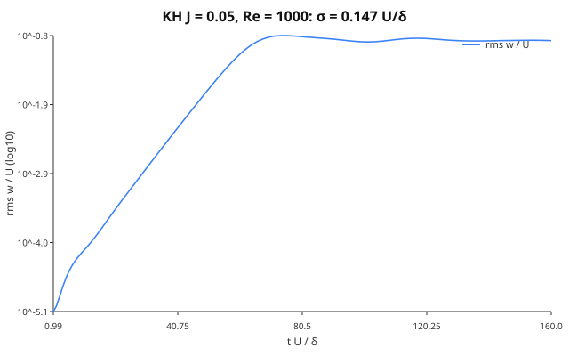
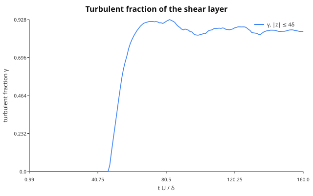
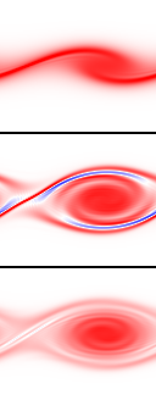
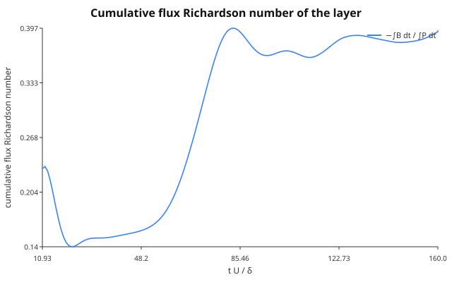
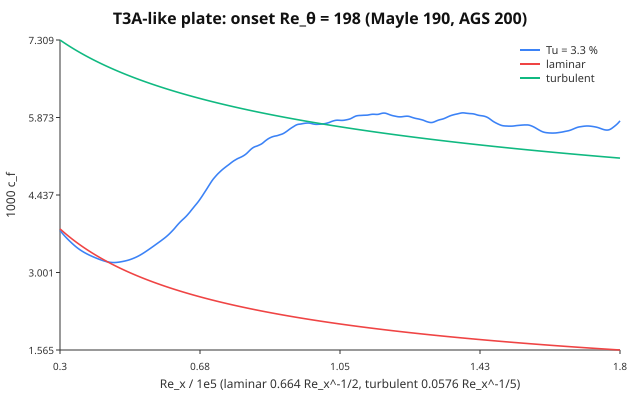
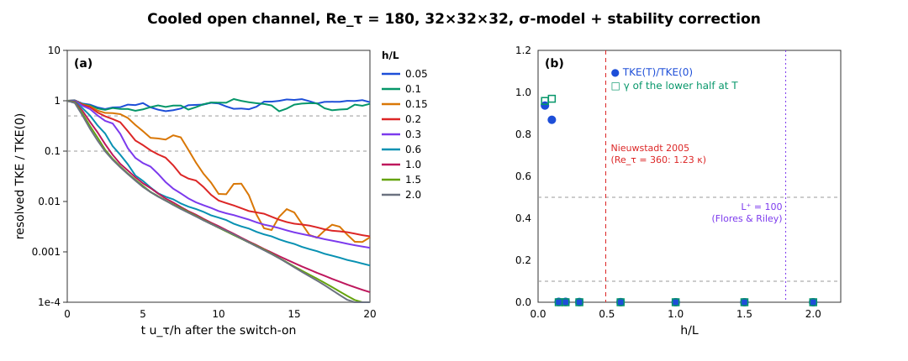
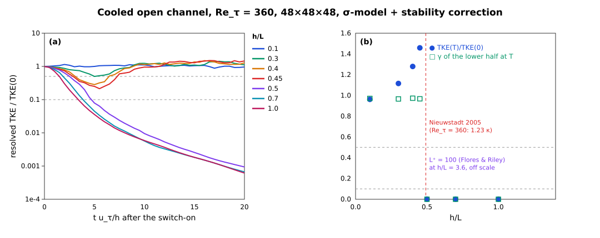
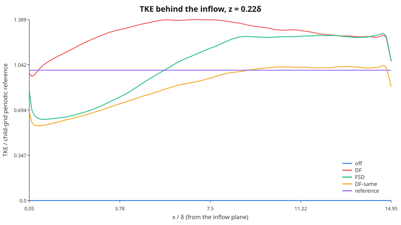
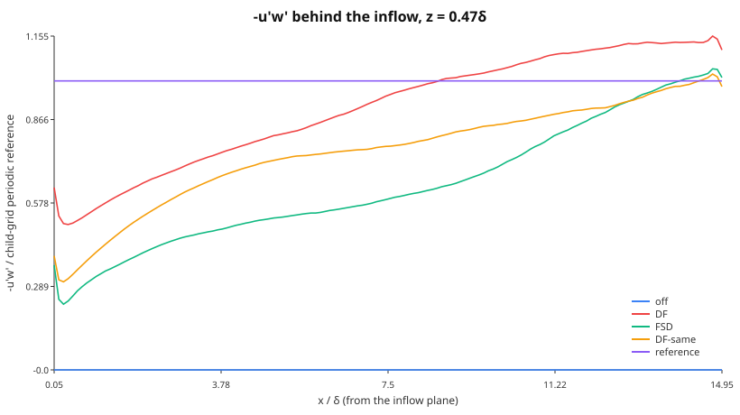

Transition and wall-bounded flow
The turbulence-closure work resolves the near-wall layer instead of modelling it wherever a case is small enough to afford it: laminar and transitional channels, the wall-resolved stratified channel, and the laminar checks of the turbulence closures. This page collects the wall treatment those runs share and the laminar–turbulent transition diagnostics (Aeolus.Transition). Wall-modelled runs (the Berlin case among them) keep the free-slip wall and add the wall-model stress on top.
Walls
The no-slip / moving-wall condition
NoSlipWall(u_wall, v_wall) is the single no-slip wall type. On the staggered grid the horizontal velocities u @ FaceX, v @ FaceY are cell-centred in $z$, so the wall lies half a cell below the first interior value $u_1$. The halo is the odd reflection about the wall velocity,
\[u_{1-h} = 2u_\mathrm{wall} - u_h, \qquad h = 1,\dots,H_z,\]
so the face average $\tfrac12(u_0 + u_1)$ seen by every stencil is exactly $u_\mathrm{wall}$ and a linear profile through the wall is extended exactly. The viscous operator in the wall cell becomes
\[\nu\,\frac{u_2 - u_1}{\Delta z^2} - \nu\,\frac{2(u_1 - u_\mathrm{wall})}{\Delta z^2},\]
the standard second-order ghost-cell treatment (Ferziger & Perić 2002, §8.10). The vertical velocity and every cell-centred field ($p, θ, ν_t$) are treated exactly as by the free-slip ImpermeableWall: $w = 0$ on the wall face with an antisymmetric halo, mirror (Neumann) for scalars. The pressure problem therefore does not change, and the cosine-FFT solve stays exact.
A no-slip wall can face a free-slip one, which gives an open channel:
FieldBoundaryConditions(:periodic, :periodic; bottom = :noslip, top = :wall)
FieldBoundaryConditions(:periodic, :periodic; bottom = :noslip, top = NoSlipWall(U, 0)) # Couette lidA time-dependent wall (Stokes' second problem) reassigns sim.bcs with the new wall velocity before each step.
Wall stress
wall_shear_stress(sim; side = :bottom, component = :u) is a method of the cut-cell generic wall_shear_stress, not a new name. It returns the plane mean of $ν\,∂u/∂z$ across the wall face, formed from the same halo the viscous operator uses: $ν\,2(u_1 - u_\mathrm{wall})/Δz$ on a no-slip wall and exactly zero on a free-slip one. With periodic $x, y$ and $w = 0$ on the walls, advection and the pressure gradient drop out of the plane-integrated momentum budget, which is
\[\frac{d}{dt}\int_0^{L_z} \bar u\,dz = τ(\mathrm{top}) - τ(\mathrm{bottom}) + G L_z .\]
Implicit diffusion with a moving wall
A moving wall makes the discrete diffusion operator affine, $∇·(ν∇φ) = L_0 φ + g$, where $g$ is the wall term. The CG solve of solve_implicit_diffusion! iterates with the stationary wall ($L_0$, symmetric positive definite), using homogeneous_bcs, and adds $Δt\,g$ to the right-hand side. ARK2 stages solve for the state, so the wall term is kept. Rosenbrock stages solve for increments, whose wall value is zero, so it is dropped. :wall runs have no wall term and take the same code path as before (homogeneous_bcs(bcs) === bcs).
The places that special-case a wall were all audited. A missed one would silently fall back to free slip:
| Site | Treatment of NoSlipWall |
|---|---|
fill_halos! (_fill_z!) | new wall-pair methods; the ImpermeableWall pair keeps its own |
FieldBoundaryConditions, nest_bcs | :noslip symbol, bottom/top keywords; a mixed z pair must be two walls, anything else is an ArgumentError |
pressure solver choice (_default_solver) | non-periodic → CosineFFTPoissonSolver, unchanged |
| IMEX implicit diffusion | affine wall term (homogeneous_bcs) |
IMEX pinned w row (_constraint_index) | behaviour change: was "bottom or top is an ImpermeableWall", now is_wall(bcs.bottom). The pinned row is the bottom wall face Hz + 1; the top wall face sits in the halo, so only the bottom decides. The old symbol constructor could not build a case where the two differ |
apply_cutcell_velocity_bc! | acts on apertures only; the wall comes through fill_halos! |
| anelastic / pseudo-incompressible cores | through fill_halos!; only z-periodic is rejected |
Verification
All runs below are on (4, 4, Nz) grids with the full 3-D fractional-step driver (step!, $Δt = 0.3\,Δz^2/ν$), in test/walls.jl (removed).
| Flow | Reference | Measured |
|---|---|---|
| Couette, Re = 100, Nz = 16, from rest | $u = Uz/h$, $τ = νU/h$ | $‖u - Uz/h‖_∞ = 2.7\times10^{-15}U$; $τ = νU/h$ to $10^{-15}$ |
| Plane Poiseuille, Nz = 16/32/64 | $u = \frac{G}{2ν} z(h-z)$, $u_b = Gh^2/(12ν)$ | L2 order 2.0000 / 2.0000; $u_b$ off by $4.9\times10^{-4}$ at Nz = 64; $τ_b = Gh/2$ to $10^{-10}$ |
| Stokes I, Nz = 128, $t = 0.1h^2/ν$ | $U\,\mathrm{erfc}(z/2\sqrt{νt})$ | $L_∞$ error $2.3\times10^{-5}U$; wall stress $-1.7839$ vs $-ν U/\sqrt{πνt} = -1.7841$ |
| Stokes II, $ω = 2π$, 6th period | decay length $δ = \sqrt{2ν/ω}$ | $δ$ fitted to $2.8\times10^{-4}$; phase lag $z/δ$ to 2 % |
| 3-D random flow, lid moving in $x$ and $y$ | plane momentum budget | residual $8.7\times10^{-18}$ per step |
| IMEX Couette (ARK2, Rosenbrock2, $Δt ≈ 13×$ explicit limit) | explicit steady state | $1.1\times10^{-14}U$, $2.6\times10^{-15}U$ |
$\mathrm{erfc}$ is GasOptics.erfc_series (one source of truth). The Stokes I domain is $2h$ deep, so the semi-infinite solution is the exact reference: the top's image term is $\mathrm{erfc}(2h/\sqrt{4νt}) ≈ 8\times10^{-6}$. In a domain only $h$ deep, the top wall reflects $2.5\,\%\,U$ by $t = 0.1h^2/ν$. That 2.5 % is a finite-domain effect of the reference, not a solver error. A :wall run (explicit, ARK2 and Rosenbrock2, SGS on) is bitwise identical to the code before the change. That comparison against the previous master was made by hand. The suite does not automate it. It checks only that :wall keeps the original fill_halos! methods and that _constraint_index and homogeneous_bcs leave it unchanged.
The Berlin case
The Berlin ground is not a NoSlipWall. It is a rough, wall-modelled surface: the MOSTWallLaw stress of Aeolus.WallModels (#169) is applied as an implicit drag over a free-slip :wall, see The Berlin case. A resolved no-slip wall at $Δx = 15.6$ m would put the first velocity point $Δz/2 ≈ 3$ m from the wall, with a viscous sublayer of $ν/u_* ∼ 10^{-4}$ m.
Laminar–turbulent transition
Phase 59 (#180) gives the repository one owner for the laminar/turbulent and intermittency diagnostics, the module Aeolus.Transition. The stable-boundary-layer collapse (P58-e), the CASES-99 "hockey stick" (P58-d) and relaminarisation (P59-e) use these functions and do not redefine them. Transition defines no Richardson number: $N^2$ and $Ri_g$ come from the stability contract and its pointwise fields (buoyancy_frequency_squared!, gradient_richardson!).
Shear instability and intermittency
The tanh shear layer
The parallel shear layer $U(z) = U\tanh(z/δ)$ is inviscidly unstable to waves $e^{iα(x - ct)}$. Its most unstable wavenumber is $αδ = 0.4446$, with growth rate $σ = αc_i = 0.1897\,U/δ$ (Michalke 1964). With a stable stratification $N^2(z) = J (U/δ)^2 \operatorname{sech}^2(z/δ)$, the local gradient Richardson number is $Ri_g(z) = J\cosh^2(z/δ)$. Its minimum, at the centre, is the bulk parameter $J$. For this profile the neutral curve is $J_c(α) = α^2 (1 - α^2)$ (Drazin 1958), with maximum $J_c = 1/4$ at $αδ = 1/\sqrt 2$. This agrees with the Miles–Howard theorem: a parallel flow with $Ri_g ≥ 1/4$ everywhere is linearly stable (Miles 1961; Howard 1961).
validation/transition_kh.jl checks these results with the Boussinesq core in 2-D ($N_y = 1$), with free-slip walls at $z = ±L_z/2$ ($≥ 8.9δ$) and $Re = Uδ/ν = 1000$. The seed is $w' = 10^{-4} U \sin(αx)\,e^{-z^2/δ^2}$. The base state is held against its own viscous diffusion by the body force $-ν∇^2(\text{base})$, which is the frozen parallel flow that the linear theory assumes. The time stepping is projected SSP-RK3 (step_rk3! with body_force!) at CFL 0.6.
| case | grid | measured | reference |
|---|---|---|---|
| $J = 0$, $αδ = 0.4446$ | 128 × 1 × 256 | $σ = 0.1864\,U/δ$ ($R^2 = 0.99995$) | 0.1897 inviscid (Michalke 1964): 1.76 % below |
| $J = 0$, $αδ = 0.7071$ | 128 × 1 × 256 | $σ = 0.1396\,U/δ$ | — (sets the e-folding time $τ_0 = 7.2\,δ/U$) |
| $J = 0.15$, $αδ = 0.7071$ | 128 × 1 × 256 | $σ = 0.0391\,U/δ$ | unstable: $J < J_c = 1/4$ |
| $J = 0.30$, $αδ = 0.7071$ | 128 × 1 × 256 | $A(5τ_0)/A(τ_0) = 0.223$, fitted $σ = -0.054$ | stable: $Ri_g > 1/4$ everywhere |
| $J = 0$, $αδ = 0.4446$, no SGS | 64 × 1 × 128 | $σ = 0.1820$ | quoted |
| the same, Smagorinsky $C_s = 0.1$ | 64 × 1 × 128 | $σ = 0.1769$ (−2.8 %) | quoted |
| the same, σ-model $C_σ = 1.35$ (P59-b, #184) | 64 × 1 × 128 | $σ = 0.1820$ ($ν_t ≡ 0$) | within 3 % of no SGS |
The 1.76 % shortfall at $J = 0$ is the sum of the viscous reduction at $Re = 1000$ and the discretisation error of the second-order operators at $Δx = 0.11δ$. At $64 × 128$ ($Δx = 0.22δ$) the shortfall grows to 4.1 %, so most of it is numerical. The Smagorinsky closure removes another 2.8 %, because its $ν_t$ acts on the laminar shear of the base flow. The σ-model (P59-b, #184) does not. Its $ν_t$ is zero for any 2-D flow ($σ_3 = 0$), so the layer grows at exactly the no-SGS rate. The same property keeps the molecular wall stress of a laminar Couette flow (Walls, above) unchanged with the SGS on: σ gives $νU/h$ to 2.8e-14, while Smagorinsky adds $(C_sΔ)^2(U/h)/ν$ = 4.5 % at $Re = 100$, $N_z = 32$.
The turbulent fraction γ(z)
A cell is turbulent when the vorticity fluctuation exceeds a fraction of the mean vorticity magnitude of its level,
\[\frac{|ω'|}{⟨|ω|⟩} > \text{threshold}, \qquad ω' = ω - ⟨ω⟩,\]
and $γ(z)$ is the fraction of the level's fluid cells that are turbulent (turbulent_fraction). This is the plane-averaged indicator of Brandt, Schlatter & Henningson (2004). $ω$ is computed at the cell centre with the same velocity-gradient stencil as the Smagorinsky strain rate. A laminar parallel shear flow has a uniform $ω$ in each plane, so $γ = 0$ exactly. The default threshold 0.2 marks almost all of a developed isotropic field: if $ω'$ were a Gaussian vector, only about 1 % of cells would fall below $0.2⟨|ω|⟩ = 0.32σ$. Measured on a decaying 32³ random solenoidal field, $γ ≥ 0.984$ on every level. On a synthetic field that is random in one half of the domain and at rest in the other, $γ$ = 0.513–0.515. The excess over 0.5 is the vortex sheet at the two cuts, about 1.8 cell columns each. laminar_mask! is the complement within the fluid, and solid cells are never turbulent. normalization = :volume divides by the domain-mean $|ω|$ instead. Use it when the levels of interest have very different vorticity levels.
In the Kelvin–Helmholtz billow of examples/kelvin_helmholtz/kelvin_helmholtz.toml (the shear_layer run type; the config reproduces the script it replaced bit for bit, figures included) ($J = 0.05$, $Re = 1000$, free base state), $γ$ of the layer $|z| ≤ 4δ$ stays exactly 0 through the linear stage. It rises once the billow rolls up (0.78 at $t = 60\,δ/U$, when $A = 0.075U$) and peaks at 0.92 at saturation ($t = 75$):



Time-series intermittency
The intermittency factor is the fraction of time a signal spends above a threshold (Townsend 1976): intermittency_factor(series; threshold) counts samples, and intermittency_factor(t, series; threshold) weights each sample by the interval it starts. An on/off signal with duty cycle 0.3 gives 0.3 exactly.
Flux Richardson number, buoyancy Reynolds number, V_TKE
\[Ri_f = -\frac{B}{P}, \qquad B = \frac{g}{θ_0}⟨w'θ'⟩, \qquad P = -⟨u'w'⟩\partial_z U - ⟨v'w'⟩\partial_z V\]
(Ellison 1957). Its irreversible part is the mixing efficiency (Ivey & Imberger 1991). flux_richardson uses the resolved plus the SGS fluxes ($τ_{i3} = -2ν_t S_{i3}$, $⟨w'θ'⟩_{\rm sgs} = -(ν_t/Pr_t)\partial_zθ$) and matches the hand values of an analytic field to $10^{-10}$. On a vertically stretched grid (StretchedGrid) its vertical differences, and those of the vorticity behind turbulent_fraction and the vorticity_y output, span the local spacings (the per-level metrics of the Smagorinsky kernel, $∂U/∂z$ over the centre heights): on a surface-refined grid (Δz = 10–60 m) $P$ and $B$ of the analytic field match to $7\times10^{-14}$ (#505). In the billow example, the cumulative $-∫B\,dt/∫P\,dt$ of the layer is about 0.15 through the linear stage, 0.345 at saturation and 0.394 at $t = 160\,δ/U$:

The buoyancy Reynolds number is $Re_b = ε/(νN^2)$ (Gibson 1980; Smyth & Moum 2000). The turbulence velocity scale of Sun et al. (2012) is $V_{TKE} = \sqrt{(σ_u^2 + σ_v^2 + σ_w^2)/2}$. The grid Reynolds number $UΔ/(ν + ν_t)$ and the fraction of cells with $Ri_g > 1/4$ (supercritical_fraction, which counts cells of a gradient_richardson! field) are the transition diagnostics of the Berlin turbulence_diag addon.
Growth-rate fit
growth_rate(t, A) fits $\ln A = σt + c$ by least squares. Without an explicit window it picks the longest run of samples that meets two conditions: $R^2 ≥ 0.999$, and the rates of the run's three thirds agree to 1 %. $R^2$ alone is not enough, because it grows with the span of $\ln A$. A window that includes the seed adjustment and the onset of saturation still passes 0.999, but its rate is biased: 0.1859 instead of 0.1864 in the KH test, and 2.8 % low on a synthetic saturating series, where the thirds criterion is 0.3 % low.
Flat-plate transition
P59-d (#185) adds the spatially developing zero-pressure-gradient flat-plate boundary layer: the Blasius solution, the fringe region that makes such a layer possible on the x-periodic FFT grid, a free-stream top boundary, free-stream turbulence, and the integral diagnostics that locate transition. Everything lives in Aeolus.Transition, except the damping profile (Operators) and the top boundary (BoundaryConditions).
The Blasius layer
blasius_solution integrates $f''' + \tfrac12 f f'' = 0$, $f(0) = f'(0) = 0$, $f'(∞) = 1$ with classical RK4 (12 000 steps on $0 ≤ η ≤ 12$) and finds $s = f''(0)$ by a secant iteration on $f'(η_{\max}; s) - 1$. Five iterations give $f''(0) = 0.3320573362$ (Howarth 1938: 0.332057), the displacement constant $∫(1 - f')dη = 1.7207876575$, $θ$ constant $0.6641146724 = 2f''(0)$ to 1e-10 (the momentum-integral identity, checked by an independent Simpson quadrature), $η_{99} = 4.90999$ and $H = 2.59110$. blasius_profile is the cubic Hermite interpolant of the table ($f'$, $f''$ and $f''' = -\tfrac12 f f''$ are all tabulated, so each interpolant is C¹), and blasius_velocity returns $u = U f'$, $w = \tfrac12\sqrt{νU/x}\,(ηf' - f)$.
The fringe region
A spatially developing layer grows downstream, so a periodic domain needs a region that returns the outflow to the inflow. The fringe of Nordström, Nordin & Henningson (1999) adds $-λ(x)(\mathbf u - \mathbf u_{\rm target})$ with
\[λ(x) = λ_{\max}\Big[S\Big(\frac{x - x_{\rm start}}{Δ_{\rm rise}}\Big) - S\Big(\frac{x - x_{\rm end}}{Δ_{\rm fall}} + 1\Big)\Big], \qquad S(x) = \frac{1}{1 + \exp\big(\frac{1}{x - 1} + \frac{1}{x}\big)}\ (0 < x < 1),\]
$S = 0$ below and $1$ above (their eq. 2.3). The rate comes from the Operators.DampingProfile with a NordstromRamp, the same type, rate function and kernel (_add_damping!) that the Rayleigh sponge add_sponge! uses with its SinSquaredRamp: one damping-profile implementation for every relaxation term. add_sponge! is bit for bit unchanged on all three mesh types (asserted against the verbatim Phase-7 kernel; the Berlin smoke run gives an identical state with either kernel).
The target is the Blasius layer at the fringe_distance — the distance from the leading edge of the upstream periodic image inside the fringe — so the profile the fringe releases is already developing at the right rate and its $w$ satisfies continuity. A target frozen at the inflow $x_{in}$ released a layer with $H = 2.37$ instead of 2.59 at the inflow, and $c_f$ stayed 4–5 % low for half the plate.
The free-stream boundary
A closed lid cannot hold a growing layer: the free stream must accelerate by $Δδ^*/H$ and the layer feels a favourable pressure gradient. On the 2-D test grid ($H = 16δ^*_0$) a free-slip lid gave $c_f$ 16–28 % above Blasius, even normalised by the local edge velocity. FreeStreamBoundary is the far-field condition of the spatial DNS of Spalart (1988) and Brandt et al. (2004): zero shear for $u, v$ and a prescribed transpiration $w = W(x)$ on the top face. The pressure problem stays a Neumann problem (the face value enters the divergence of the top cell), so the cosine FFT solver remains exact, provided the net transpiration vanishes. blasius_freestream prescribes the displacement velocity $W_∞ = U\,dδ^*/dx = 0.8604\,U/\sqrt{Re_x}$ and returns the plate's outflow through a bump confined to the fringe rise, upstream of the plateau where the velocity is pinned.
The momentum budget of one explicit step closes exactly: $\frac{d}{dt}∫u\,dV = ∫F_{\rm fringe}dV - τ_w A - ∮u\,w_{\rm top}dA$, residual 5e-12 (2e-13 relative) with the lid and with the free-stream top.
Laminar plate
flat_plate_setup assembles the case in units of the inflow $δ^*_0$ and $U_∞$. In 2-D at $Re_{δ^*_0} = 200$ (256 × 64 cells on 512 × 16 $δ^*_0$, plate $Re_x$ = 1.35e4 to 1.0e5), started from a uniform stream and run for 1200 RK3 steps (12 s), the layer develops from the fringe inflow to $c_f/c_{f,\rm Blasius} ∈ [0.9982, 1.0001]$ and $H ∈ [2.574, 2.583]$ over the middle 60 % of the plate; the target is recovered at the fringe exit to 5.2e-4 $U$. The issue's σ-model variant of this check is not run separately: P59-b (#184) merged after this section was written, and in this 2-D flow ($N_y = 1$, $v = 0$) the velocity gradient has rank ≤ 2, so $σ_3 = 0$ and the σ-model's $ν_t$ vanishes identically; the variant would reproduce the run above.
Free-stream turbulence and bypass transition
FreeStreamDisturbance represents isotropic turbulence by random Fourier modes (Jacobs & Durbin 2001; Brandt et al. 2004) with the von Kármán spectrum $E(κ) = \tfrac23 a (κL)^4/(b + (κL)^2)^{17/6}\,Lq$. The velocity is the grid curl of a vector potential sampled on the cell edges, so its discrete divergence is zero to round-off (3.9e-16 measured); the energy is scaled to $q = \tfrac32 (Tu\,U)^2$ and the spectrum length calibrated so the discrete mode set has the requested $L_{11}$ (measured on a 512 × 32 × 32 box with 400 modes: Tu 0.0497 for 0.05, $L_{11}$ 1.042 for 1.0 with seed 1; one realisation scatters with the seed — 0.82–1.43 over seeds 1–16, standard deviation 0.14 — and the ensemble mean over those 16 seeds is 1.027, which is what the test asserts). The disturbances enter through the fringe target as Taylor's frozen turbulence (disturbance_fringe_update), kept out of the inflow layer by a damping of the vector potential.
The onset is located by transition_onset: the minimum of $c_f$ upstream of the point from which $c_f$ stays 10 % above laminar. In the coarse 3-D sanity test (96 × 24 × 48, $Re_{δ^*_0} = 300$, plate $Re_x$ = 3.0e4 to 1.26e5, $c_f$ averaged over the last 200 of 700 steps) Tu = 6 % raises the outlet $c_f$ ($Re_x$ 1.03e5–1.17e5) to 3.47 times Blasius. Two laminar controls run beside it:
- Tu = 0 in 2-D ($N_y = 1$), the cheap exact check: without a seed the 3-D run stays exactly 2-D. Outlet $c_f$ 1.015 times Blasius (2 s).
- Tu = 0.1 % in 3-D on the same grid, seeded by the same
FreeStreamDisturbancegenerator at 1/60 of the amplitude (55 s on 3 threads). This checks that the laminar layer survives small 3-D disturbances. It does not transition:
| quantity (seeded 3-D control) | measured | asserted |
|---|---|---|
| $c_f / c_f(\text{2-D}, Tu = 0)$, pointwise, $Re_x$ 3.5e4–1.17e5 | 0.9981–0.9995 | within 1 % |
| $[1\,2\,1]$-filtered $c_f$ / Blasius, $Re_x$ 3.5e4–1.12e5 | 0.9805–1.0074 | within 5 % |
| the same at 0.9 of the plate ($Re_x$ 1.17e5) | 1.052 | — |
| $v_{\rm rms}$ in the layer, sampled every 50 steps | rises to 1.97e-3 by step 500, then falls to 1.34e-3 | < 5e-3 throughout |
| mean layer $v_{\rm rms}$, steps 550–700 over steps 400–550 | 0.795 | < 1.2 |
| free-stream $v_{\rm rms}$ | 0.90e-3 | 0.5e-3–1.5e-3 |
| layer $v_{\rm rms}$ at Tu = 6 % (for scale) | 8.2e-2 | > 10× the control |
The disturbances need about one flow-through (≈ 270 steps) to fill the plate. After that, the spanwise velocity in the layer stays at about twice the free-stream value and decays over the last 300 steps. It does not grow. $Re_{δ^*}$ reaches 589 at 0.9 of the plate, which is above the Tollmien–Schlichting critical value of 520 ($Re_x ≈ 9.1\times10^4$). The unstable stretch is too short for TS waves to grow anywhere near transition amplitudes, and the measured $c_f$ shows no sign of them. The 5 % tolerance matches the 2-D laminar plate. Blasius is a parallel-flow similarity solution, the two ends of the plate feel the inflow (−2 %) and the fringe, and transition would add 50 % or more. At 0.9 of the plate the fringe alone raises $c_f$ by 5 %: a 2-D Tu = 0 run at $Δx = 2.1$ gives 1.053 at the same point. That is why the Blasius window stops 48 $δ^*_0$ before the fringe. A first version ran to 0.9 of the plate and failed there; the expectation was wrong, not the code.
Finding: a grid-scale wiggle on the coarse grid. At $Δx = 4.2\,δ^*_0$ both laminar runs, with and without the seed, carry the same stationary $2Δx$ (odd–even) oscillation in $c_f$. It is ±0.6 % near the inflow and grows to ±17 % just upstream of the fringe, so the unfiltered $c_f$/Blasius is 0.88–1.22 over the plate. The outlet-window average used for the Tu = 0 number (1.015) hides it. It is a resolution artefact: the 2-D control at $Δx = 2.1\,δ^*_0$ has it at ±0.03 % and stays within 1.6 % of Blasius up to $x ≈ 265\,δ^*_0$. The $[1\,2\,1]/4$ filter removes exactly this mode, which is why the Blasius comparison uses filtered $c_f$. The grids of the 2-D laminar plate ($Δx = 2$) and of the T3A-like example ($Δx = 1.04$) are fine enough not to need it.
The T3A-like example (examples/flat_plate_t3a/flat_plate_t3a.toml, the flat_plate run type, bitwise the former script on a small grid; Tu = 3.3 % as in Roach & Brierley 1992) runs 576 × 64 × 96 cells on 600 × 36 × 24 $δ^*_0$ ($Re_x$ = 3.0e4 to 1.9e5; $Δx = 1.04$, $Δy = 0.56$, $Δz = 0.25\,δ^*_0$, i.e. $Δx^+ ≈ 17$, $Δy^+ ≈ 9$, $Δz^+ ≈ 4$ with the downstream $u_τ$) without an SGS model — a Smagorinsky $ν_t$ from the laminar wall shear alone would be several times $ν$ and keep the layer laminar.
Measured (1500 RK3 steps at $Δt = 1\,δ^*_0/U$, statistics over the last 600; 8034 s, 5.4 s per step on 8 threads of a shared machine):
| quantity | result | reference |
|---|---|---|
| free-stream Tu (streamwise) | 3.23 % at the inflow, 2.77 % at $Re_x = 10^5$, 2.60 % at the plate end | 3.3 % requested |
| onset (minimum of $c_f$) | $x = 48\,δ^*_0$, $Re_x = 4.48\times10^4$ | — |
| $Re_θ$ at onset, measured $θ$ | 198 | Mayle (1991) 190 (+5 %), Abu-Ghannam & Shaw (1980) 200 (−1 %) |
| $Re_θ$ at onset, Blasius $θ$ at that $Re_x$ | 141 | −26 % / −30 % |
| downstream $c_f/(0.0576\,Re_x^{-1/5})$, $Re_x$ 1.2e5–1.8e5 | 1.057–1.135 (mean 1.084) | issue target: within 20 % — met |
| downstream $H$ | 1.45–1.50 | ≈ 1.4 |
The onset is within the ±30 % band of both correlations whichever $θ$ is used (the free-stream turbulence thickens the pre-transitional layer, so the measured $θ$ at onset is 40 % above Blasius). Against the $Re_θ$ form $0.024\,Re_θ^{-1/4}$ (Kays & Crawford) at the measured $Re_θ$ = 443–552 the ratio is 1.12–1.17.
The turbulent $c_f$ of this model-free calculation is resolution-limited. Refining $z$ alone saturates near 1.2 at the coarse $Δx, Δy$; the streamwise and spanwise spacing has to come down with it. Same case, same seed, same 1500-step protocol:
| grid $N_x × N_y × N_z$ | $Δx, Δy, Δz$ ($δ^*_0$) | $c_f/(0.0576\,Re_x^{-1/5})$, $Re_x$ 1.2e5–1.8e5 | onset $Re_θ$ |
|---|---|---|---|
| 288 × 32 × 48 | 2.08, 1.13, 0.50 | 1.260–1.387 (mean 1.297) | 190 |
| 288 × 32 × 96 | 2.08, 1.13, 0.25 | 1.180–1.248 (mean 1.211) | 191 |
| 288 × 32 × 128 | 2.08, 1.13, 0.19 | 1.156–1.258 (mean 1.204) | 191 |
| 432 × 48 × 96 | 1.39, 0.75, 0.25 | 1.122–1.200 (mean 1.173) | 232 |
| 576 × 64 × 64 | 1.04, 0.56, 0.38 | 1.135–1.197 (mean 1.162) | 199 |
| 576 × 64 × 96 (the example) | 1.04, 0.56, 0.25 | 1.057–1.135 (mean 1.084) | 198 |
The first row is what the example ran before; it missed the 20 % target. The local edge velocity is within 0.7 % of $U_∞$ downstream on every grid, so normalising by it changes none of these ratios by more than 0.012.

The boundary-layer integrals of a disturbed layer are taken to its boundary_layer_edge: the fringe-fed free stream carries a ≈ 0.5 % mean deficit, and integrating to the top inflated $θ$ by 50 % at the inflow.
The Berlin case
Stated exception (#185): the Berlin domain is laterally periodic with geostrophic forcing and has no inflow direction, so a fringe, a free-stream top and an inflow generator have no place in it; inflow boundaries arrived with nesting (#265), and the inflow generator is coupled there (N-inflow-e, #268, below). Transition stays coupled through the turbulence_diag addon (P59-c), and the Rayleigh sponge of every Berlin step now takes its rate from the shared damping profile (state bit-identical to the Phase-7 kernel in the smoke run). No Berlin list changed.
Relaminarisation in strongly stable stratification
P59-e (#195) validates laminar–turbulent coexistence and collapse with the closures that exist — the σ-model (P59-b), the stability correction (P55-e) on the TurbulenceStability functions (P58-a) — and adds no closure and no stability function. Transition gains the three numbers the collapse studies use, all from existing definitions:
friction_reynolds(sim)— $Re_τ = u_τ h/ν$, $u_τ$ from the molecular wall stress of the no-slip bottom (wall_shear_stress, P59-a) or the nominal value;relaminarisation_criteria(sim; heat_flux)— $h/L$ with the Obukhov length of the surface flux (SurfaceExchange.obukhov_length, there is no second one), $L^+ = L u_τ/ν = Re_τ/(h/L)$, and the bulk Richardson number of the top and bottom cell layers and the bulk velocity (SurfaceExchange.bulk_richardson);relaminarised_fraction(laminar, Ri, νt, ν)— the share of the $Ri_g > 1/4$ cells that are γ-laminar with $ν_t/ν < 10^{-2}$.
Operators.laminar_consistent(closure) marks the closures whose $ν_t$ vanishes identically in laminar flow (σ, and the wrappers around it). The cases are the P54-d builder with bottom_bc = :noslip (P55-f) and the new channel_case(surface_heat_flux = Q) hook: the flux-cooled open channel of Nieuwstadt (2005), no-slip bottom, free-slip insulated top, the prescribed bottom θ flux of the core, molecular $Pr = 0.71$.
Laminar stratified Poiseuille flow (exact)
validation/relaminarisation.jl, test 1. At $Re_τ = 10$ the steady closed-channel Poiseuille flow with the stable conduction profile ($Ri_τ = 50$) gives $ν_t ≡ 0$ (exactly, $ν_h$, $ν_v$ and $κ_v$) with σ, σ + correction (isotropic and anisotropic length scales); the velocity equals the closure-free run and the unstratified ($g = 0$) run to < 1e-10 (measured 0: buoyancy is balanced by the hydrostatic pressure). The wall stress is $u_τ^2$ to 1.4e-7. Smagorinsky 0.17 keeps max $ν_t = 0.53 ν$ and lowers the molecular wall stress to 0.659 $u_τ^2$. The flux-cooled open channel ($Q = -0.05$) reproduces the long-time conduction solution under a constant flux and an insulated top, $θ = \bar θ(t) + Q(z - h)^2/(2κh)$, $d\bar θ/dt = Q/h$, to 1.6e-11 of $|Q|h/κ$; θ is conserved to the prescribed flux to 1.5e-10 (round-off at θ ≈ 10³); u is unchanged by the buoyancy (measured 0). The criteria match their closed forms to 1e-12 ($h/L = κg|Q|h/(θ_0 u_τ^3)$, $L^+ = Re_τ/(h/L)$, $Ri_b$ of a linear θ).
Decaying stratified turbulence
Test 2: a laminar shear $S$ held fixed (the plane mean of $u$ is reset to $S(z - H/2)$ after each step — a function of $z$ only, so $∇·u$ is untouched) under a random-phase perturbation ($E ∝ k^4 e^{-2(k/k_p)^2}$, $k_p = 8π/H$, $u_{rms} = 0.05 SH$), free-slip walls, 32³, $ν = 3 × 10^{-4} SH^2$, σ + correction (isotropic). The homogeneous stratified shear flow decays above a stationary Richardson number $Ri_s ≈ 0.1–0.2$ and grows below it (Holt, Koseff & Ferziger 1992; Jacobitz, Sarkar & Van Atta 1997). Measured at $Ri = N^2/S^2 = 1$ against the neutral control:
| $Ri = 1$ | neutral | |
|---|---|---|
| resolved $⟨w'θ'⟩$, peak down-gradient | $-7.5 × 10^{-4}$ | — |
| reversed (counter-gradient) peak, at $tN$ | $+9.5 × 10^{-5}$, 2.5 | — |
| γ (volume-normalised) < 0.1 at $tN$ | 11.1 | never (min 0.959) |
| resolved TKE at $tS = 12$ | $3.5 × 10^{-5}$ | $2.4 × 10^{-3}$ |
| collapsed max $ν_v/ν$, σ + correction | 0 | |
| collapsed max $ν_h/ν$, σ + correction | 0.017 | |
| collapsed max $ν_t/ν$, Smagorinsky 0.17 (same field) | 0.118 |
The issue expected γ < 0.1 "within about 10 $N^{-1}$": measured 11.1, asserted ≤ 12. The time is set by the viscous decay of the residual wave field rather than by $N$: at $Ri$ = 2 and 4 ($ν = 3 × 10^{-4}$) γ falls below 0.1 at $tS ≈ 11$ in both, i.e. 16 and 22 $N^{-1}$ (scan, not in CI). The issue expected max $ν_t/ν < 10^{-2}$ for σ + correction in the collapsed state; that holds for the corrected (vertical) viscosity, not for the horizontal one (0.017), which the correction does not touch and which σ keeps on the three-dimensional residual waves. Smagorinsky stays at 0.12 ν, $10^2$–$10^3$ times the corrected value (at this $ν$; it scales as $1/ν$).
The cooled open channel (example)
Test 3 of the issue — the 32³ open channel at $Re_τ = 180$, collapse at $h/L = 2.0$ and survival at $h/L = 0.3$ after 20 $h/u_τ$ — costs 4.5–9 min per 20 $h/u_τ$ run (6 200–9 900 SSP-RK3 steps; 267–521 s wall time on the shared machine), plus a 2-min neutral spin-up,, over the 2-min CI budget, so it is configs/relaminarisation_sweep.toml (with the former examples/sbl/relaminarisation_channel.jl ((removed by ONE-g, #456)) reading the runs against the references) and is not in the suite. Set-up: $2πh × πh × h$, $Re_τ$ by the forcing $u_τ^2/h$, σ + correction (isotropic length scales), stress form, $Pr = 0.71$, $g/θ_0 = 1$. A neutral spin-up of 10 $h/u_τ$ from the law of the wall plus a smooth random perturbation (white grid-scale noise does not trip the 32³ channel: from noise = 3 the σ and the dynamic-Smagorinsky runs relaminarise, $⟨τ_w⟩ → 0.44 u_τ^2$) reaches TKE 2.24 $u_τ^2$, $⟨τ_w⟩ = 0.94 u_τ^2$, $U_b = 15.5 u_τ$; the neutral restart keeps TKE at 0.76–1.04 of its switch-on value over 5 $h/u_τ$. Each $h/L$ then runs 20 $h/u_τ$; collapsed means the volume-mean resolved TKE ends below 10 % of the switch-on value, survived above 50 %.
| $Re_τ$, grid | $h/L$ survived (TKE(20)/TKE(0)) | $h/L$ collapsed | critical $h/L$ | $L^+_c$ |
|---|---|---|---|---|
| 180, 32³ ($Δx^+ = 35$, $Δz^+ = 5.6$) | 0.05 (0.94), 0.10 (0.87) | 0.15, 0.2, 0.3, 0.6, 1, 1.5, 2 (all ≤ 0.002) | 0.12 | 1470 |
| 180, 48³ | — | 0.15 (0.001), 0.3 (0.000) | < 0.15 | > 1200 |
| 360, 48³ ($Δx^+ = 47$, $Δz^+ = 7.5$) | 0.10 (0.96), 0.30 (1.12), 0.40 (1.28), 0.45 (1.46) | 0.5, 0.7, 1.0 (all 0.001) | 0.47 | 760 |
| 360, 96³ ($Δx^+ = 24$, $Δz^+ = 3.8$) | — | 0.5 (0.001) | < 0.5 | > 720 |
| Nieuwstadt (2005), DNS, $L$ without $κ$ | 1.23 at $Re_τ = 360$ | 293 | ||
| the same, this page's $L$ (with $κ$) | $1.23 κ$ = 0.49 at $Re_τ = 360$ | 730 | ||
| Flores & Riley (2011), DNS | ≈ 100 |
The critical $h/L$ is the geometric mean of the largest surviving and the smallest collapsed value. Every $L$ on this page is the Obukhov length of SurfaceExchange.obukhov_length, $L = u_τ^3 θ_0/(κ g |Q|)$, which includes $κ$ (as does relam_heat_flux of the example driver). Nieuwstadt (2005) defines $L$ without $κ$, so his $h/L = 1.23$ is $h/L = 1.23 κ = 0.49$ ($κ = 0.40$) here — the comparison value that Donda's thesis (TU/e) states for this convention. Before #236 this page compared the 48³ critical value (then 0.39, from the bracket 0.30–0.50) against 1.23 directly and reported a factor-3 miss that was a convention error.
The runs at $h/L = 0.40$ and 0.45 (#236) survive through a transient collapse: the TKE ratio falls to a minimum of 0.28 at $t = 5.0 h/u_τ$ (0.40) and 0.21 at 5.5 (0.45), the wall stress to 0.46 and 0.43 $u_τ^2$, and both recover by $t ≈ 10$ to end at 1.28 and 1.46 with $⟨τ_w⟩$ = 1.09 and 1.15 $u_τ^2$ (the stratified flow has a higher TKE than the neutral switch-on state). At 0.50 the same descent does not turn: TKE 0.05 at $t = 6$, 0.001 at 20, $⟨τ_w⟩$ 0.37. A transient collapse followed by recovery just below the threshold is what Donda et al. (2015) describe for this channel. Each run took 1 380–1 430 s (18 070 steps).
96³ at the collapsed edge (#236). One run at $h/L = 0.50$ on 96³ ($Δx^+ = 24$, $Δy^+ = 12$, $Δz^+ = 3.8$, twice the 48³ resolution in each direction), from its own 10 $h/u_τ$ neutral spin-up (TKE 1.80 $u_τ^2$, $⟨τ_w⟩ = 1.02 u_τ^2$, $U_b = 16.7 u_τ$; 10 750 s), also collapses: TKE ratio 0.001 and γ 0.000 at $T = 20 h/u_τ$, $⟨τ_w⟩ = 0.37 u_τ^2$ (48³: 0.001, 0.000, 0.37); 22 855 steps, 12 909 s. The finer grid delays the collapse slightly (γ of the lower half falls below 0.1 at $t ≈ 9$ instead of ≈ 7; TKE 0.13 against 0.08 at $t = 5$) but does not stop it. Doubling the resolution does not move the collapsed edge of the bracket.
Collapse is complete in every collapsed run: γ of the lower half is 0.000 at $T$ and the wall stress falls to 0.51–0.53 $u_τ^2$ ($Re_τ = 180$) and 0.37 $u_τ^2$ (360, both grids) while the flow accelerates. In the surviving runs γ stays at 0.96–0.97. The neutral spin-ups reach TKE 2.24 / 1.46 / 1.68 / 1.80 $u_τ^2$ and $⟨τ_w⟩$ = 0.94 / 0.86 / 0.94 / 1.02 $u_τ^2$ (180 at 32³ and 48³, 360 at 48³ and 96³).


Against the references. The issue's targets were ±30 % on the critical $h/L$ and a factor 1.5 on $L^+$. At $Re_τ = 360$, in one convention ($L$ with $κ$), the measured 0.47 is 0.96 of Nieuwstadt's $1.23 κ = 0.49$ (−4 %, inside the ±30 %). The reference lies inside the measured bracket (survived 0.45, collapsed 0.50) but at its top edge, 2 % below the smallest collapsed value. There is residual tension: Donda's runs at $h/L = 0.49$ (this convention) survive, ours collapse at 0.50 on 48³ and on 96³, so either the threshold here lies in 0.45–0.49, slightly below the DNS one, or the two agree to within the 2 % between 0.49 and 0.50 that the bracket does not resolve. The 96³ run rules out the 48³ grid spacing as the cause of the collapse at 0.50 (96³ is still coarser than the DNS); whether 0.45 still survives on 96³ was not run. $L^+_c$ = 760 (360) and 1470 (180) are 7.6 and 15 times the ≈ 100 of Flores & Riley. That $L^+$ target is not consistent with Nieuwstadt's at $Re_τ = 360$ either: his threshold is $L^+ = 360/0.49 ≈ 730$ with $κ$ in $L$ (293 without). $L^+ = 100$ in this convention would need $h/L = 3.6$; read as a $κ$-free $L^+$ (250 here) it would need $h/L = 1.44$ — either way 3–7 times Nieuwstadt's 0.49, so the two DNS thresholds cannot both be met at this $Re_τ$. This page does not resolve the inconsistency; the $h/L$ comparison with Nieuwstadt, at the same $Re_τ$ and in the same set-up, is the one used here. Test 3 of the issue — collapse at $h/L = 2.0$, survival at $h/L = 0.3$ at $Re_τ = 180$ — holds for the collapse and fails for the survival: $h/L = 0.3$ collapses on 32³ and on 48³. The trend is right — the threshold rises with $Re_τ$ (0.12 → 0.47 for a doubling; a constant $L^+_c$ would give a factor 2) — and the collapse itself is the physical one (the near-wall shear production cannot keep up with the buoyancy sink, the wall stress drops and the flow accelerates laminar-like; Donda et al. 2015).
At $Re_τ = 180$ test 3's survival at $h/L = 0.3$ still fails, and there is no Nieuwstadt threshold at that $Re_τ$ to set against the 0.12. The flux boundary condition, the molecular $Pr$ and the buoyancy are verified exactly by test 1 (θ budget 1.5e-10, the conduction profile 1.6e-11, u blind to the hydrostatic buoyancy); $L$ is that of the surface flux and the nominal $u_τ$, with $κ$ (Nieuwstadt's is without), and $L^+ = Re_τ/(h/L)$. The remaining candidate is resolution: the DNS thresholds are for a resolved near-wall cycle, and these grids are coarse wall-resolved LES ($Δx^+$ = 35–47). The collapse at $h/L = 0.3$, $Re_τ = 180$, is insensitive to the closure, $Pr$ and $Pr_t$: σ + correction, σ with $Pr_t = 1$ (instead of the core's 1/3) and no SGS model at all end at TKE ratios 0.001, 0.001 and 0.001 after 20 $h/u_τ$ (without a model the decay is slower: 0.46 at 5 $h/u_τ$, against 0.06); plain σ, Smagorinsky 0.1 and $Pr = 1$ are at 0.06, 0.10 and 0.05 after 5 $h/u_τ$, on the same path. Refining 32³ → 48³ did not move $h/L = 0.15$ or 0.3 to survival. At $Re_τ = 360$ the coarse LES agrees with Nieuwstadt's threshold (−4 %, collapse at 0.50 unchanged from 48³ to 96³); at $Re_τ = 180$ the example documents the coarse-LES threshold (0.12) only, with no DNS value at that $Re_τ$ to validate it against.
The command lines are in the header of the example. Every run writes its own run folder (run.toml, output/); an interrupted run continues with aeolus run <run-folder> --resume, and the analysis script re-reads the finished folders to reprint the table and redraw the figures.
The Berlin case
turbulence_diag reports the relaminarised fraction of the stable layer (see The Berlin case): in :winter at 06:00, 4.0 % of the 49 056 stable cells (Smagorinsky; 4.1 % with σ), 0.1 % of 15 392 with $ν$ reduced from 2 to 0.2 m² s⁻¹.
Synthetic inflow turbulence
An open inflow face fed by an interpolated coarse parent (the Berlin nest, epic #246) carries no energy below about two parent cells; without perturbations the child's inflow stays quasi-laminar over a long fetch. Transition owns the generator contract and two providers (N-inflow-a, #252); the inflow statistics (N-inflow-b, #258) and the coupling to an open face (N-inflow-e) build on them.
The contract and the Lund transform
An AbstractInflowGenerator works on an $n_s × n_z$ plane and returns, each step, unit_fluctuations!$(ũ, ṽ, w̃, gen, Δt)$: zero-mean, unit-variance, mutually uncorrelated planes. A Reynolds-stress tensor is imposed afterwards by the Lund, Wu & Squires (1998) transform $u_i = a_{ij}ũ_j$ with $a$ the Cholesky factor of $R$ (lund_coefficients, Lund Eq. 13; apply_lund!, uniform or per height). The radicands are ratios of leading principal minors, so the factorisation exists exactly when $R$ is positive semi-definite, Schumann's (1977) realizability; a non-realizable $R$ throws. This is the one Cholesky in the code base; its accept/reject agrees with the minors test PrognosticSGS.is_realizable on 2000 random tensors. For the Panofsky & Dutton (1984) neutral tensor ($σ_{u,v,w} = 2.39, 1.92, 1.25\,u_*$, $\overline{u'w'} = -u_*^2$) $aa^{\rm T} = R$ to 1e-12. generator_state / restore_generator_state! follow the sgs_state pattern: a restored generator continues bit for bit.
The digital filter
DigitalFilterGenerator is the Xie & Castro (2008) filter used by PALM (Kadasch et al. 2021). A fresh plane of Gaussian white noise is filtered with the separable kernel $b_k ∝ \exp(-π|k|/(2n))$, $\sum b_k^2 = 1$, whose coefficients belong to the output level, so $L_s$, $L_z$ and $T$ may vary with height and component. In time the planes are blended as $ψ(t) = ρψ(t-Δt) + \sqrt{1-ρ^2}\,ψ_{\rm new}$, $ρ = e^{-Δt/T}$, which keeps unit variance and gives $R(τ) = e^{-τ/T}$ for any sequence of adaptive steps.
The length convention (an expectation that was wrong). Xie & Castro set $n = L/Δ$ and state $R(r) = \exp(-πr/(2nΔ))$. The autocorrelation of their exponential filter is instead $(1 + ar)e^{-ar}$, $a = π/(2nΔ)$, with integral $4nΔ/π$: the nominal width gives an integral length of 1.112, 1.159 and 1.170 L for $L/Δ$ = 2, 4 and 8 with their truncation $N = 2n$ (1.27 L untruncated). The same applies to time: their $T_{XC}$ has integral $2T_{XC}/π$. The code therefore calibrates $n$ so the discrete $∫_0^∞R\,dr$ is $L$ to 1e-10 (digital_filter_kernel; $n$ = 1.791, 3.370, 6.594 for $L/Δ$ = 2, 4, 8, i.e. 1.14, 1.07, 1.05 × $πL/(4Δ)$) and uses $T$ itself as the integral time. The documented shape is $R(r) ≈ (1 + 2r/L)e^{-2r/L}$ (kernel RMS difference 0.012 to 0.017 for $r ≤ 2L$).
Measured (test/synthetic_inflow.jl):
| quantity | measured | asserted |
|---|---|---|
| P&D stresses, $u_* = 0.3$, 64 × 48, 2000 steps, $L = 2Δ$, $T = 5Δt$ | $σ/u_*$ = 2.390, 1.923, 1.248; $\overline{u'w'}/u_*^2 = -1.0053$ | 5 % diag, 7 % $u'w'$ |
| expected sampling error (Bartlett $N_{\rm eff}$ = 1.98e5 for variances) | 0.32 % diag, 0.71 % $u'w'$ | tolerances ≥ 3× |
| means of the unit planes | 0.0044, −0.0034, 0.0020 | $< 3/\sqrt{N_{\rm eff}}$ = 0.0153 |
| cross-correlations before the transform | ≤ 0.0010 | < 0.03 |
| $∫R\,ds / L_s$ for $L/Δ$ = 2, 4, 8 | 0.999, 1.013, 1.018 | 10 % |
| $∫R\,dz / L_z$ for $L/Δ$ = 2, 4, 8 | 1.010, 0.976, 0.989 | 10 % |
| shape RMS vs $(1 + 2r/L)e^{-2r/L}$, $r ≤ 2L$ | 0.017, 0.015, 0.015 | 0.05 |
| $∫R\,dτ / T$ for $T/Δt$ = 2, 4, 8 | 1.022, 1.007, 1.027 | 10 % |
| $L_z$ = 2 and 8 m in two regions of one plane | 2.007, 8.020 | 15 % |
| cost of one step, 64 × 40 face, $L = 4Δ$ | 0.10 ms | — |
Free-stream turbulence as a second provider
FreeStreamInflow wraps a FreeStreamDisturbance (its constructor and the flat-plate path are unchanged): the frozen mode field is swept through the plane at $U_∞$ and evaluated as the continuous mode sum (disturbance_velocity, which the staggered grid curl approximates to $O((κΔ)^2)$), then whitened with the Cholesky factor of the exact mode-set covariance (disturbance_covariance). The whitening removes the $O(n_{\rm modes}^{-1/2})$ anisotropy of a finite mode set; $a$ is lower triangular, so $ũ$ keeps the $L_{11}$ of $u'$. With 400 modes, 32 × 32 points and 2000 steps the P&D tensor is reproduced within 1.0, 0.6, 0.07 % (diagonal) and 0.9 % ($u'w'$), batch standard errors 1.1, 0.7, 0.6 and 1.4 %. $L_{11}$ from the plane time series ($r = U_∞τ$) is 1.011 ± 0.015 L. That figure needs an ensemble: one realisation scatters (0.66 to 1.35 L over 80 seeds), and the correlation of the $κ$-band-limited von Kármán set first crosses zero only near $r ≈ 8.5L$, so short records or per-seed zero crossings are dominated by noise (a first 24-seed, 60 L-record version gave 1.083 ± 0.043, which could not resolve 5 %; the test, not the code, was changed: 80 seeds × 2000 modes, 1600 L records). The digital filter remains the general provider: the mode field is isotropic with one intensity, one length and one advection speed.
Inflow statistics (N-inflow-b)
The generator needs, at every child face, $R_{ij}(z)$, $L_s(z)$, $L_z(z)$ and $T(z)$. An InflowStatistics source supplies them through inflow_stresses(src, z, t) and inflow_lengths(src, z, t), in the generator's face frame (normal, along the face, vertical), whatever the parent is. Every tensor returned has passed lund_coefficients; one that did not is replaced by its nearest positive-semidefinite tensor (realizable_stress, eigenvalues clipped) and the correction is booked in inflow_projection_log. The resolved part is always realizable. The SGS part is not when $ν_t|S|$ exceeds $e$ (a strongly sheared, weakly turbulent cell), and the test exercises that case.
An Aeolus parent: ParentResolvedStatistics. After each parent step, update_inflow_statistics!(src, Δt) folds the state into a running exponential mean, $S ← ρS + τ(1-ρ)x$, $W ← ρW + τ(1-ρ)$, $ρ = e^{-Δt/τ_{\rm avg}}$, statistic $S/W$. The weight is the exact integral of the kernel over the step, so the memory e-folds in exactly $τ_{\rm avg}$ (600 s by default) for any sequence of adaptive steps, and the first sample is not biased towards zero.
Resolved part. $R^{\rm res}_{ij} = ⟨u_i'u_j'⟩$ is averaged over the whole plane (
region = :plane) or over the parent columns withinring_widthcells of the edge of the child footprint (region = :ring). The variances are taken at each staggered component's own points, asOperators.resolved_tke_profiledoes: $u$ on the x-faces, $v$ on the y-faces, $w$ the mean of the variances on the level's two z-faces. Interpolating to the cell centre first would multiply a mode's variance by $\cos^2(k_iΔ_i/2)$ along the component's own direction. That is ¼ at $λ = 3Δ$, inside the scale gap, and over an isotropic gap annulus it keeps 50 % (flat spectrum) to 58 % ($k^{-11/3}$) of the $u$ band variance. A cross term needs both components at one point. It is the correlation coefficient of the cell-centred fields times $\sqrt{R_{ii}R_{jj}}$. That is exact for one Fourier mode and realizable by construction (a correlation matrix scaled by a positive diagonal). For a broadband field the centre correlation weights each mode by the product of the two components' transfer functions. On the plane the column sum of $\tfrac12\operatorname{tr}R^{\rm res}$ equals that ofresolved_tke_profileto 1e-12, and level by level for $u$ and $v$. The statistic is computed in one pass over the planes that also feed the spectra, the band-pass and the vertical lags (six components, a ring region), so theOperatorsprofiles are matched in convention and checked, not called.SGS part. $R^{\rm SGS}_{ij} = \tfrac23 e\,δ_{ij} - 2ν_t\bar S_{ij}$, with $\bar S$ the deviatoric cell-centred strain (
Operators._strain_at), so $\operatorname{tr}R^{\rm SGS} = 2e$ exactly. $e$ comes from the new closure genericsgs_tke!: the TKE closure's $e$, the Reynolds-stress closure's $\tfrac12τ_{ii}$, or, for any eddy-viscosity closure, the closure's own estimate. That estimate is the Deardorff (1980) relation $ν_t = c_kΔ\sqrt e$ inverted ($c_k = 0.1$, Moeng 1984).Scale gap (the default). The interpolated boundary values already carry the parent's well-resolved eddies, so the generator adds only what is missing:
\[R^{\rm gen} = R^{\rm SGS} + R^{\rm res}(k_c < |k_h| ≤ r\,k_c), \qquad k_c = \frac{2π}{c_{\rm gap}Δ_p}.\]
The band runs from the parent's effective resolution (wavelength $c_{\rm gap}Δ_p$, with $c_{\rm gap} = 4$, the upper end of the 2–4 $Δ_p$ in the issue) to the child's, $c_{\rm gap}Δ_p/r$. It is cut out of each native plane by an FFT band-pass of the laterally periodic parent. At $r = 1$ the band is empty, so $R^{\rm gen} = R^{\rm SGS}$; at the Berlin $r = 2$ it covers everything shorter than $4Δ_p$. The lengths are those of the band-passed field, capped at $c_{\rm len}Δ_p$ ($c_{\rm len} = c_{\rm gap}/2$, half the cutoff wavelength).
mode = :fullgives $R^{\rm SGS} + R^{\rm res}$.Lengths and time. The horizontal autocovariances come from the spectra of the native planes (Wiener–Khinchin). The vertical ones are the plane covariances with the
lag_z = 16levels above. Each length is the integral of the correlation coefficient up to its first zero crossing. The time is $T = L_n/\max(|U_n|, 0.1\ {\rm m\,s^{-1}})$, with $L_n$ the length along the face normal (Taylor).
A parent without resolved turbulence: ParametrizedStatistics. This is for #58. The scales are $u_*$, $w_*$, $z_i$ and $L$. $w_*$ is derived from $L$ ($w_*^3 = -z_iu_*^3/(κL)$, with SurfaceExchange's κ) unless given, and $L$ may come from the surface fluxes through SurfaceExchange.obukhov_length. The shear and convective variances are added, as in Rotach, Gryning & Tassone (1996) and PALM's generator. With $x = \min(z/z_i, 1)$: $σ_u^2 = (2.39u_*)^2(1 - 0.8x) + 0.35w_*^2$, $σ_v^2 = (1.92u_*)^2(1 - 0.8x) + 0.35w_*^2$, $σ_w^2 = (1.25u_*)^2(1 - x/1.7) + 1.8x^{2/3}(1-0.8x)^2w_*^2$, $\overline{u'w'} = -u_*^2(1 - x)$. The coefficients have these sources:
- the surface values of the shear part are the neutral ratios of Panofsky & Dutton (1984);
- the decay of the shear part is Rotach's ($5 - 4x$ and $1.7 - x$, normalised);
- the convective $σ_w^2$ is Lenschow et al. (1980).
The tensor is rotated by the mean-wind angle and decays by a factor 10 per length_scale above $z_i$. The lengths follow PALM (Kadasch et al. 2021): a single length_scale, $L_z ≤ z_i$, and $T = ℓ/|U_n|$. This is a numerical choice, not a similarity law. The blend has no stable-stratification correction.
Measured (test/inflow_statistics.jl (removed)):
| test | measured | asserted |
|---|---|---|
| $u = U + A\sin(ky)\cos(ωt)$, 3 periods × 16 samples: $σ_u^2/(A^2/4) - 1$ | 2.4e-15 | 1e-10 |
| same, $\overline{u'w'}$ with $w = B\sin(ky)\sin(ωt)$ | 7.9e-18 | 1e-12 $AB$ |
| same, $L_s$ of the sine to its zero crossing / $(λ/2π)$, $λ = 32Δ$ | 0.9968 | 0.5 % |
| e-folding of the running mean / $τ_{\rm avg}$ (fixed and random steps) | 1.0000000000 | 2 % (and 1e-9) |
| $\operatorname{tr}R^{\rm SGS} - 2e$ (random field, TKE closure) | round-off | 1e-14 $e$ |
| $S = 0$: $R^{\rm SGS} - \tfrac23 e δ_{ij}$ | 0 | 1e-15 |
| band $R_{11}$ of $\sin$ at $λ = 3Δ$ (in the gap) + $λ = 8Δ$ (not) / $A^2/2$ | 1 to 1e-12 | 1e-12 |
| $r = 1$: $R^{\rm gen} - R^{\rm SGS}$ | 0 | 1e-12 |
| laminar parent, $e = e_0$: $R - \tfrac23e_0δ_{ij}$ | 0 | 1e-15 |
| band $R_{11}$ of a $u$-sine of $λ = 3Δ$ varying in x / $A^2/2$ ($v$ in y likewise; centre value 0.25) | 1 to 1e-12 | 1e-12 |
| band $R_{33}$, $w$ with $λ = 3Δz$ in z, level mean / $B^2/4$ (centre value 0.25) | 1 to 1e-12 | 1e-12 |
| one-mode band $\overline{u'w'}$ / $AB/2$ (centre value 0.5) | 1 to 1e-12 | 1e-12 |
column sum $\tfrac12\operatorname{tr}R^{\rm res}$ / that of Operators.resolved_tke_profile (random field) | 1 to 1e-12 | 1e-12 |
| generator-filled parent (240 × 64 × 40, 30 fills): $R_{11,22,33}$ / imposed, $\overline{u'w'}$ / $R_{13}\sqrt{f_xf_z}$ | 0.987, 0.990, 0.980, 0.982 | 3 % |
| same: $L_s$ / 4 Δ (u, v, w) | 0.938, 0.949, 0.936 | 10 % |
| same: $L_z$ / 4 Δ | 1.008, 0.999, 1.056 | 10 % |
| same: $T$ / 6 Δt | 0.945, 0.941, 0.938 | 10 % |
| Lenschow $σ_w/w_*$ at $z/z_i = 0.3125$ ($u_* = 0$) | 0.6828325099 (analytic to 1e-10; the maximum) | 0.683 ± 5e-4 |
| neutral $σ_{u,v,w}/u_*$ at the surface | 2.39, 1.92, 1.25 | 1e-12 |
| realizable for $-z_i/L$ ∈ {0, 1, 10, 100}, 301 heights, two wind angles | no projection | — |
The generator-filled parent (an expectation that was wrong). The parent's x-slices are successive generator planes ($Δt$ = 1 s, $U$ = 1 m/s), with the Panofsky & Dutton tensor imposed. A first version took the statistics at the cell centres. Each staggered component was then the two-point mean along its own direction, which attenuated the variances by $(1 + ρ_1)/2$ ($ρ_1$ the lag-1 correlation: $e^{-1/6}$ in x, the filter's discrete $R_1$ in y and z), 8–14 % here. The test asserted that attenuated target as if it were a property of the measurement. It was the same smoothing that removed ¾ of a $λ = 3Δ$ mode from the scale gap, so the code was wrong. The variances now match the imposed tensor directly. The cross term $\overline{u'w'}$ keeps one stated factor. The generator puts $u$ and $w$ at the same index, which on the C-grid is half a cell apart in x and z, so their centre correlation is $ρ\sqrt{f_xf_z}$, with $f = (1 + ρ_1)/2$ (0.923 and 0.950). The lengths now come from the native spectra: $v$'s $L_s$ (0.949) agrees with $u$'s and $w$'s (0.938, 0.936); the centre smoothing had lengthened it to 1.006.
The remaining 1–2 % deficit, the same sign for every component, is consistent with two sources:
- the plane-mean removal bias, about $1/N_{\rm eff} ≈ 0.6$ % per plane;
- the sampling error, about 0.8 %.
Cost. One update on a 64 × 64 plane with 20 levels and lag_z = 16 takes 5.0 ms (7.2 ms inside the CBL run below). On 192 × 192, the Berlin parent, it takes 65 ms on one core (57 ms before the native-point variances, which add one second-moment pass per level). With $τ_{\rm avg}$ = 600 s, a cadence of tens of seconds of parent time is enough.
A convective Aeolus parent (examples/cbl_inflow_statistics/cbl_inflow_statistics.toml, the model with [sgs] model = "tke" and the [inflow_statistics] component, ONE-l #475; examples/cbl_inflow_statistics/report_cbl_inflow_statistics.jl prints the table from the last record of its output.nc). The parent is the 64³ CBL of examples/cbl_tke/cbl_tke.toml: $Δx = 50$ m, $Δz = 25$ m, $Q = 0.1$ K m/s, Deardorff–Moeng TKE, 2 h, $z_i = 1175$ m, $w_* = 1.57$ m/s. The last 30 min are folded into the running mean (τ_avg = 600 s, refine (2, 2, 4), so the band is 100–200 m). Values at the west face:
| z (m) | $σ_u$ resolved | $σ_u$ missing (band + SGS variance) | $σ_w$ resolved | $σ_w$ missing | $\overline{u'w'}$ resolved / missing | $e_{\rm SGS}$ | $L_z$ full / band | $L_s$ band |
|---|---|---|---|---|---|---|---|---|
| 38 | 0.911 | 0.455 (0.067 + 0.139) | 0.540 | 0.511 | 0.0034 / −0.0004 | 0.209 | 188 / 91 | 22.7 |
| 88 | 0.783 | 0.428 (0.058 + 0.125) | 0.751 | 0.510 | 0.0067 / 0.0013 | 0.187 | 179 / 89 | 22.9 |
| 188 | 0.632 | 0.394 (0.047 + 0.109) | 0.942 | 0.463 | 0.0061 / 0.0012 | 0.163 | 176 / 86 | 22.7 |
| 288 | 0.598 | 0.382 (0.042 + 0.104) | 1.019 | 0.453 | −0.0012 / −0.0002 | 0.157 | 167 / 79 | 22.7 |
| 388 | 0.590 | 0.376 (0.040 + 0.101) | 1.043 | 0.444 | −0.0020 / −0.0013 | 0.152 | 157 / 75 | 23.2 |
(σ in m s⁻¹, variances in m² s⁻², $e_{\rm SGS}$ in m² s⁻², lengths of $u$ in m.) The SGS part dominates what is missing: $R^{\rm SGS}_{11}$ is two to two and a half times the band variance. The band column is 1.46 times what the cell-centred statistic gave (0.046 at 38 m), the $\cos^2$ loss described above. Near the ground the missing $σ_w^2$ (0.26 m² s⁻²) is nearly as large as the resolved one (0.29 m² s⁻²). Higher up the parent resolves most of $σ_w$ (1.04 against 0.44 m/s missing at 388 m). There is no mean wind, so $\overline{u'w'}$ is noise at the 1e-3 level. The band lengths are well inside the cap ($2Δ_p$ = 100 m) and above the child's $Δ/2$.
Applying the perturbations on the inflow faces (N-inflow-c)
InflowTurbulence puts the generator and the statistics on the lateral open faces of a nest child (N-inflow-c, #264). It wraps the boundary data of the open faces (the NestBoundaryData of N-nest-d, or any AbstractBoundaryData) and is installed as that data, so the superposition
\[u_{b,i} = u_{{\rm data},i} + a_{ij}\,ũ_j\]
happens inside update_open_boundaries!, after the data fill and before the single mass-flux correction of N-open-b, at every stage time of every core. One digital-filter generator runs per face (normal, along-face and vertical components; $(u, v, w)$ on an x-face, $(v, u, w)$ on a y-face); the top face is excluded, as in PALM (Kadasch et al. 2021).
Inflow detection. Per face and level, $U_n(z)$ is the face mean of the data's outward normal velocity over the fluid faces. The perturbation is multiplied by $r = \min(1, \max(0, -U_n/u_{\min}))$ ($u_{\min}$ = 0.5 m s⁻¹ by default): nothing on outflow levels, full amplitude where the inflow exceeds $u_{\min}$, linear in between, so a veering wind switches a face on and off continuously. The integral time follows Taylor, $T = L_n/\max(|U_n|, u_{\min})$, with $L_n$ the normal integral length of the statistics (inflow_normal_length).
Zero added mass flux. The area-weighted mean of the normal perturbation is removed per face and level over the receiving faces. This is exact for any constraint weight that depends on height only ($ρ̄(z)$, $ρ̄θ̄(z)$), so the N-open-b correction sees exactly the data's imbalance. The removal costs the normal component the variance of the face mean,
\[f = \frac{1}{n^2}\sum_{i,j=1}^{n} R(|i-j|Δ_s) \;\le\; \frac{1}{n}\sum_{r=-∞}^{∞} R(rΔ_s) = \frac{2L_s}{L_{\rm face}},\]
($R ≥ 0$ for the exponential filter; $L_s$ is the one-sided integral length, so the two-sided integral is $2L_s$), and $\overline{u_n'w'}$ loses the same fraction ($u_n = a_{11}ũ_1$ is the only component whose mean is removed). The bound is reached for $L_{\rm face} ≫ L_s$. The issue stated the bound as $(L_s/L_{\rm face})σ_n^2$; that is half the measured reduction (the one-sided integral where the variance of a mean needs the two-sided one), so the expectation was wrong, not the code.
Corners. The cell next to two open faces belongs to the x-face at levels where that face carries turbulence and to the y-face otherwise; the other face neither perturbs it nor counts it in its mean. The along-face (staggered) component of an x-face is not applied at the slot of the adjacent y-face's normal velocity, and the vertical component not at the ground face.
Time. The applied perturbation is piecewise linear in time between knots; a knot is a complete perturbation (generator advanced, Lund transform, ramp, receiving faces, mean removal), so every blend of two knots carries zero added flux. For nest data the knots are the ends of the parent step, exactly like the data's own linear blend; otherwise every refresh at a new time is a knot. This matters for the divergence. SSP-RK3 combines the step-start state and its stages, $u^{n+1} = \tfrac13u^n + \tfrac23u^{(2)}$, and the boundary buffers with them. Boundary values that are linear in time make the combined buffers equal to a fresh refresh at the step's end. A NestedRun refreshes the buffers at the start of every parent step, so anything else leaves a divergence on the child's faces that the combination only damps by 1/3 per substep. Three variants were tried first, and each left $\max|∇·u| = O(10^{-3})$ s⁻¹ on a refine-3 nest: planes held constant over a step, a ramp re-evaluated at every stage, and perturbations switched on at the installation time. With the knots, the divergence is 2.9e-16.
Ledgers. added_mass_flux(it) reports, per face, the net added volume flux, the largest per-level flux, and their ratio to the face's mean-flow flux. injected_ke_flux(it) is the flux of perturbation kinetic energy carried in by the mean inflow, $ρ_{\rm ref}⟨\tfrac12|u'|^2\max(-U_n, 0)⟩$ (W m⁻²), per face and as an area-weighted total. generator_state(it) / restore_generator_state! snapshot the generators, the knots and the running sums of the statistics, so a restart continues bit for bit.
Measured (test/inflow_turbulence.jl):
| test | result |
|---|---|
| U = (3, 1, 0), 500 RK3 steps, 24 × 16 × 12 | added flux / mean-flow flux ≤ 3.6e-17 (W, S), 0 on the outflow faces; per level ≤ 2.6e-16; max|∇·u| 2.0e-16 s⁻¹; KE flux 0.465 W m⁻² |
| plane stresses, 128 × 16 west face, L_s = 2Δ, 1500 planes | R22, R33 within 0.45 %, 0.32 %; R11 / (R11(1−f)) = 1.0015, u'w' / (R13(1−f)) = 1.0064; f = 0.0309 against 2Ls/Lface = 0.0312 |
| wind through 360° in 8 steps | variance only on faces with Un < 0, exactly 0 elsewhere; ramp at Un = −u_min/2 is exactly ½ (to 1e-14); corner owned by the west face |
| refine-3 nest, ParentResolvedStatistics (folded every 10 s), wind veering 87° in 60 s | max|∇·u| child 2.4e-16 s⁻¹, added flux ≤ 2.6e-17, KE flux 0.265 W m⁻²; west-face R11, R22, R33 = 0.175, 0.205, 0.191 m² s⁻² (target at the end, level mean, 0.148, 0.155, 0.155: the statistics drift while the run is averaged) |
| restart | velocity and perturbations bit-identical after 20 RK3 steps |
Cost. On a 64 × 64 × 64 child (four faces, $L_s = 4Δ$), a refresh that makes a new knot costs 0.92 ms and a refresh within the window costs 0.22 ms. The data fill alone costs 0.08 ms.
Two-way. Feedback should skip a frame of feedback_exclude_width(it) = $2\max L_s$ next to the inflow faces (N-nest-e's exclude_width, set by exclude_inflow_feedback!). Without that frame, the feedback restricts the synthetic eddies into the parent, and the parent returns them through the next prolongation; on the refine-3 test nest over 200 s (before N-nest-e) the child's kinetic energy grew ×5.5 and the parent's ×3.2. The frame was not enough (N-inflow-e, #268): the interface flux correction copied the synthetic eddies into the parent's interface faces as well; since #418 it leaves them out. See Two-way with the generator below.
Development length behind the inflow (N-inflow-d)
How far into the child is the inflow turbulence still out of equilibrium? N-inflow-d (#266) measures it on the canonical case of the inflow-generator literature (Xie & Castro 2008; Kim, Castro & Xie 2013): a periodic precursor supplies the statistics and the mean inflow profile, and an inflow–outflow copy of the same flow is compared with it.
The flow. The neutral, wall-modelled half channel of P54-d (half_channel_case, $δ = u_* = 1$, $z_0 = 10^{-4}δ$, StaticSmagorinsky(0.1), forcing $G = u_*^2/δ$). The precursor (the parent) is periodic on $5δ × 2.5δ × δ$ at $Δx_p = 0.208δ$, $Δz = δ/16$ (24 × 12 × 16), spun up for $20δ/u_*$ and averaged over $10δ/u_*$; its ParentResolvedStatistics (mode :full, uniform time average) is the generator's statistics source, and its plane- and time-mean $u(z)$ is the inflow profile. The child is the same channel opened in x (half_channel_case(; extent, inflow): the profile as Dirichlet data on the west face, the convective outflow of N-open-c on the east face) at refine 2 horizontally ($Δx = 0.104δ$), with open lateral faces in the CI case (lateral = :open, maintainer decision on #314): south and north take the precursor's mean profile as Dirichlet data, the one-way nest default (PALM's child), so the side layers carry no turbulence of their own. The fetch statistics, the pressure and the total stress are therefore averaged over the span centre, $0.5δ$ (5 cells) from each side (FetchStatistics(sim; jrange), total_stress_profile(…; jrange)); the bulk velocity is the volume flux of the whole face. A radiation condition on the lateral faces (lateral_outflow = :convective) was tried first and rejected: the turbulent $v'$ radiates out where it points outward and is held at zero where it points inward, a rectified net outflow through the sides, so the bulk velocity fell by 0.5–1 % along the child and the 1–4δ drive bias became −58 % (DF) and −66 % (FSD), a measure of the leak, not of the fetch (one realisation). The example keeps the spanwise-periodic set-up of Kim et al. (2013, §3.1) by default (lateral = periodic), which is where the quoted 6.6δ and 12.3δ come from; in the Berlin child (#268) the lateral faces receive the running parent's turbulent fields, which is a different problem. The reference is the periodic channel on the child's grid, the equilibrium the child relaxes to. Generators: none (off), the digital filter (DF), and the random-mode FreeStreamInflow (FSD, one length: the face-mean streamwise $L_s$, swept at the bulk velocity).
Diagnostics. FetchStatistics averages the resolved moments over $y$ and time per column; the variances are taken at the native staggered points and $\overline{u'w'}$ at the cell centres, exactly as for the precursor (whose x average is the target), so no definition difference enters. development_length((x, f), T; frac) is the distance from the inflow plane beyond which $f$ stays within $[\text{frac}\,T, T/\text{frac}]$; the last $0.5δ$ (the convective outflow layer, where the variances drop) is excluded. The total stress at $x ≈ 4δ$ is total_stress_profile(…; irange) over three columns. The pressure-gradient bias is the least-squares slope of the time- and plane-mean pressure over $1δ ≤ x ≤ 4δ$, divided by $G$: the extra drive the developing flow needs.
Measured. Validation case (validation/inflow_fetch.jl, 5δ child with open lateral faces, averaged $5δ/u_*$, about 2 min for the precursor and the three children), ratios to the precursor over the span centre, one realisation (precursor seed 1):
| run | TKE at 0.22δ, x = 0.5, 1, 2, 3, 4.5δ | TKE at 0.47δ | −u'w' at 0.47δ | dp/dx bias |
|---|---|---|---|---|
| off | 0 everywhere (the mean profile stays laminar) | 0 | 0 | +71 % |
| DF | 0.99, 1.06, 1.17, 1.26, 1.35 | 0.77, 0.78, 0.81, 0.84, 0.88 | 0.53, 0.57, 0.67, 0.73, 0.78 | −2.6 % |
| FSD | 0.59, 0.59, 0.63, 0.68, 0.84 | 0.57, 0.56, 0.56, 0.56, 0.56 | 0.26, 0.32, 0.40, 0.46, 0.53 | +29 % |
The bulk velocity is the precursor's at every x to $1.9×10^{-4}$ (the uniform N-open-b correction δ of the radiated east outflow); the generator's added flux is $4×10^{-18}$ of the mean-flow flux; $\max|∇·u| < 10^{-13}$. RMS error of the total stress at $x = 3.9δ$ over $0.1δ < z < 0.8δ$: DF 0.39, FSD 0.53, off 1.32 $u_*^2$ (the precursor's total stress is within 0.05 $u_*^2$ of $u_*^2(1 - z/δ)$, Porté-Agel et al. 2000). With the span centre as the average, these are within the realisation spread of the earlier spanwise-periodic CI case (DF TKE at 0.22δ 0.97 → 1.36, bias −0.55 %, stress RMS DF 0.32, FSD 0.47).
Realisations. The run is not bitwise reproducible until #245 puts the suite on FFTW.ESTIMATE: the FFT pressure solvers plan with FFTW.MEASURE, the plan depends on timing, and the turbulence amplifies the round-off. Every run is therefore a new realisation of a precursor averaged only $10δ/u_*$ on 24 × 12 columns. Over five realisations with open lateral faces (precursor seeds 1–4, plus a repeat of seed 1):
| quantity | range over 5 realisations |
|---|---|
| DF TKE/pre, 0.22δ, x = 0.5δ → 4.5δ | 0.90–0.99 → 1.33–1.36 |
| DF −u'w'/pre, 0.47δ, x = 0.5δ → 4.5δ | 0.40–0.54 → 0.70–0.78 |
| DF dp/dx bias | −0.8 % to −8.6 % |
| FSD dp/dx bias | +27 % to +31 % |
| off dp/dx bias | +66 % to +71 % |
| total-stress RMS error at 3.9δ, DF / FSD / off | 0.33–0.46 / 0.51–0.55 / 1.23–1.32 $u_*^2$ |
| bulk velocity, max deviation | $1.9×10^{-4}$ |
(The spanwise-periodic CI case, over seven realisations: DF TKE/pre 0.72–1.39 and −u'w'/pre 0.44–1.53 at both heights, DF bias −0.6 to −9.0 %, FSD +19 to +31 %, stress RMS DF 0.30–0.35, FSD 0.40–0.53.) The orderings DF < FSD in both moments and in the total stress, and |bias| DF < FSD < off, held in every realisation, and they are what the CI case asserts.
The former example (the inflow_fetch run type, dropped with the channel cases in ONE-l #475: it ran on the periodic, pressure-driven half channel; its harness is the fixture validation/fixtures/inflow_fetch.jl of validation/inflow_fetch.jl; 15δ child, spanwise periodic, averaged $10δ/u_*$, about 11 min) gave these ratios to the child-grid reference and development lengths (δ) to 10 % / 20 %:
| run | TKE 0.22δ at x = 1, 3, 5, 10, 14δ | TKE 0.47δ | L₁₀ TKE 0.22δ / 0.47δ | L₁₀ −u'w' 0.22δ / 0.47δ |
|---|---|---|---|---|
| off | 0 | 0 | ∞ / ∞ | ∞ / ∞ |
| DF (parent statistics and mean) | 1.08, 1.26, 1.36, 1.32, 1.26 | 0.85, 0.92, 0.98, 1.12, 1.15 | ∞ / ∞ (∞ / 5.1 against the parent) | ∞ / ∞ |
| FSD (parent) | 0.63, 0.72, 0.93, 1.25, 1.26 | 0.62, 0.62, 0.62, 0.73, 0.95 | ∞ / 13.0 | ∞ / 12.5 |
| DF-same (reference statistics and mean) | 0.59, 0.69, 0.81, 1.02, 1.02 | 0.58, 0.63, 0.69, 0.83, 0.96 | 6.6 / 12.3 | 6.0 / 11.9 |
(Measured for #266. Re-run on 2026-10-09 (EX-d, #441), the config and the old script give the same bits on today's code, but not the bits of the table: the code has changed in its last bits since #266, and this flow is chaotic. The ratios move by at most 0.03 and the development lengths by at most 0.6δ: DF 1.09, 1.27, 1.37, 1.32, 1.26 / 0.84, 0.90, 0.96, 1.11, 1.13, ∞ / ∞ (5.11 against the parent); FSD 0.63, 0.72, 0.93, 1.26, 1.26 / 0.61, 0.61, 0.61, 0.72, 0.94, ∞ / 13.25, ∞ / 12.89; DF-same 0.59, 0.70, 0.83, 1.00, 1.03 / 0.59, 0.65, 0.72, 0.83, 0.93, 6.13 / 12.86, 6.03 / 11.73. The conclusions below hold for both.)


What sets the fetch. With statistics and mean from the child's own grid (DF-same, the set-up of the papers), the turbulence recovers to 10 % in $6.6δ$ at 0.22δ and $12.3δ$ at 0.47δ. Both are about 1.2 local eddy-turnover distances $U(z)\,k/ε$, with $k$ the reference TKE and $ε$ set equal to the local shear production $P = τ(z)\,∂U/∂z$ (local equilibrium), $τ$ the total stress. The half channel is not a constant-stress layer: $τ ≈ u_*^2(1 - z/δ)$, so the log-layer value $ε ≈ u_*^3/(κz)$ overestimates the dissipation by $1/(1 - z/δ)$, a factor 1.9 at 0.47δ. Measured on the reference ($τ$ and $∂U/∂z$ from its mean profile, whose shear is 10–30 % above $u_*/(κz)$, the usual LES log-layer mismatch):
| z/δ | U | k | τ | ∂U/∂z | P | $U k/P$ | with $P ≈ u_*^3(1 - z/δ)/(κz)$ | measured L₁₀ (DF-same) |
|---|---|---|---|---|---|---|---|---|
| 0.22 | 18.8 | 2.90 | 0.78 | 12.6 | 9.8 | 5.6δ | 6.1δ | 6.6δ (1.2 turnovers) |
| 0.47 | 21.0 | 1.79 | 0.53 | 7.0 | 3.7 | 10.2δ | 13.3δ | 12.3δ (1.2 turnovers) |
(Units $δ = u_* = 1$; $P = ε$ neglects turbulent transport, so the turnover distances are estimates, good to a few tens of per cent.) A synthetic field with the right one-point statistics and exponential correlations is not yet turbulence: the projection removes its divergent part within one cell (the inflow-face $\overline{u'^2}$ is 82 % of the target, one cell in 68 %), its $u'w'$ starts at 40–75 % of the target, and the energy-containing eddies have to be rebuilt by the mean shear, which takes about one turnover. In a rough-wall ABL, $U/u_* ≈ 20$, so the distance is long.
The coarse parent. With the refine-2 parent as the statistics source (the issue's set-up, and the Berlin child's), two things differ from the child grid's equilibrium. The parent's mean profile is 11 % faster at 0.22δ (the log-layer mismatch depends on the horizontal resolution), and its $R_{11}$ (resolved + SGS) is 57 % above the child grid's at 0.16δ. The child keeps the parent's mean momentum for more than 15δ, and its near-wall TKE settles 26 % above the child-grid equilibrium; the FSD run converges to the same level by 10δ, so the level is set by the mean profile, not by the generator. The digital filter starts at the precursor's level (0.97 at 0.5δ, 0.22δ) and is within 10 % of its own source at 0.47δ from 5.1δ on; the FSD, isotropic with one length and no $u'w'$ structure, starts at 60 % and rises only after 5δ. Without a generator the inflow stays laminar.
The literature number. Kim, Castro & Xie (2013) ran the XC digital filter (with and without a mass-flux correction) and their divergence-free variant XCDF at the inlet of a plane channel: $Re_τ = 395$, $60δ × 2δ × 3.5δ$, spanwise periodic, $U_b/u_τ = 18.3$. The input statistics came from DNS and from the periodic LES on the same grid. The wall shear stress and $-\overline{u'v'}$ recovered by $x/δ ≈ 10$ for XC and XCMC, "similar to those in Deck et al." for another synthetic method (§3.3). The XCDF wall stress was within 5 % at $x = 15δ$, a 14δ development distance counted from its plane at $x_0 = δ$. Its $-\overline{u'v'}$ at $(10δ, 0.1δ)$ was within about 5 %, and its pressure variance matched the periodic case from $10δ$ on. Xie & Castro (2008) could not be retrieved (closed access, with no repository copy in OpenAlex or Semantic Scholar). The Kim et al. accepted manuscript was read from the Southampton e-print (eprints.soton.ac.uk/341146). The literature development distance is therefore ≈ 10δ (10–14δ), not the 3δ placeholder, and that number is adopted here. It agrees with the turnover estimate: at $U_b/u_τ ≈ 18–20$, one turnover near $0.1–0.5δ$ is 5–10δ.
Validation: the physical fetch (validation/inflow_fetch.jl, testset "DF-same against the child-grid reference"). The reference periodic channel on the child grid (48 × 24 × 16, $30δ/u_*$) is the statistics source, the inflow profile and the target. The child is 10δ long at $Δx = 0.104δ$, averaged $5δ/u_*$, with open lateral faces as in the validation case (statistics over the span centre). The testset takes about 120–165 s (reference 68–93 s, child 50–70 s). Measured over five realisations (reference seeds 2–5, plus a repeat of seed 2):
| z/δ | $U k/P$ | L₁₀ TKE | L₁₀ −u'w' | L₂₀ TKE / −u'w' | TKE/ref at x ≈ 1δ → 9δ |
|---|---|---|---|---|---|
| 0.22 | 5.4–5.6δ | 5.6–6.6δ (1.03–1.20 turnovers) | 5.6–7.9δ (1.03–1.46) | 4.1–4.4δ / 4.2–5.1δ | 0.59–0.62 → 0.98–1.01 |
| 0.47 | 9.7–10.4δ | ∞ within 9.5δ | ∞ within 9.5δ | 5.9–9.2δ / 5.1–7.2δ (∞ in one) | 0.60–0.63 → 0.79–0.87 |
With periodic y (six realisations, before #314 decision 3): L₁₀ at 0.22δ 5.6–6.5δ (TKE) and 6.2–6.8δ (−u'w'), the same within the spread.
Asserted (maintainer decision 1 on #314: the fetch target is about 10δ, Kim et al. 2013): at 0.22δ both moments are within 10 % by $x ≤ 10δ$, with L₁₀ between 0.6 and 1.6 local turnovers. At 0.47δ the turnover distance is more than 1.5 times that at 0.22δ; both moments stay below 90 % over the first half turnover, are still rising across the child (by more than 0.1 from 1δ to 9δ; measured 0.17–0.47), and are within 30 % of the reference over 8–9.5δ. The 10δ figure of Kim et al. was measured at the wall and at 0.1δ. In this rough-wall flow at 0.47δ, the spanwise-periodic 15δ example gives 12.3δ for TKE and 11.9δ for −u'w', i.e. 1.2 turnovers, slightly beyond it; this is the "about 10δ" of the decision, and the 10 % fetch at 0.47δ is not asserted inside the 10δ child.
Expectations that proved wrong (the expectations, not the code):
- "TKE and −u'w' at 0.2δ and 0.5δ within 10 % of the precursor by x ≤ 3δ" (the issue's placeholder). Not met in any configuration (tables above). Kim et al. (2013) give ≈ 10δ (10–14δ) for the same generator in a channel, and the turnover estimate gives 5.6δ at 0.22δ and 10δ at 0.47δ. The placeholder is too short by a factor of 2–4, whatever the generator. The literature number (≈ 10δ, maintainer decision on #314) is adopted and asserted in the DF-same testset (0.22δ within 10 % by 10δ). At 0.47δ it is exceeded slightly (12.3δ, example). Against the coarse parent, no 10 % fetch exists at 0.22δ for any generator: the DF ratio moves away from 1 with $x$ (TKE 0.97 → 1.36, $-u'w'$ 0.85 → 1.37 over 0.5–4.5δ) as the child relaxes to the equilibrium of the parent's faster mean profile (the coarse-parent bias, left to #268 by the same decision). The CI case asserts only that the DF is closer to the precursor than the FSD, in TKE and in −u'w'. An earlier absolute band, [0.7, 1.5], was a regression bound calibrated on two runs. It came within 0.02 of its floor over the seven realisations and was removed.
- "Total stress at 4δ within 10 % for 0.1δ < z < 0.8δ". Not met (RMS 0.33–0.46 $u_*^2$ with open lateral faces, 0.30–0.35 periodic), for the same reason; asserted: DF < FSD < off.
- "Driving pressure-gradient bias < 2 %". Not met reliably, and the expectation is wrong for a developing flow. Over 1–4δ, the extra drive balances the streamwise change of the momentum flux $\overline{u^2}$ and of the wall stress. It is therefore a property of the fetch, not zero: off +66 to +72 %, FSD +19 to +31 %, DF-same +18 to +19 % (CI, open lateral faces) and +23 % (example), DF with the coarse parent −0.8 to −8.6 % (open) and −0.6 to −9.0 % (periodic). Locally it is +6 % over 1–3δ and −5 % over 2–4δ in one realisation, so the 1–4δ value of the coarse-parent DF is a cancellation. The cancellation is between the parent's faster mean flow and its larger stresses; it is not equilibrium. The CI case asserts the ordering |DF| < |FSD| < |off|.
- The null comparison (off < 50 %) and the bulk velocity (0.5 %) hold as issued.
- "Open lateral boundaries" (the issue's set-up, required by the maintainer on #314) hold in the CI case: the lateral faces carry the mean profile (Dirichlet) and the fetch is measured over the span centre. Not an expectation that proved wrong, but a set-up the first attempt had replaced by periodic y.
The Berlin case (N-inflow-e)
The nested Berlin child runs InflowTurbulence on its four lateral faces by default, the addon :inflow_turbulence (#268; design, options and ledger on the nesting page): the digital filter with ParentResolvedStatistics of the Aeolus parent, which runs on a StretchedGrid — the statistics take that grid's level heights and thicknesses (bit-identical to a RegularGrid on a uniform one, test/inflow_turbulence.jl; the child lies in the parent's uniform layers, where the vertical differences and lags are exact). The statistics are folded with fold_inflow_statistics! from the nest's window hook, while the parent is at rest: one-way, the parent's next step runs ahead on another task (SC-c, #403). The FSD provider is free_stream_generator; ParametrizedStatistics is the option for a parent without resolved turbulence. One digital-filter step on a 64 × 40 face costs 0.10 ms; one update of ParentResolvedStatistics on the 192 × 192 Berlin parent (20 levels) 65 ms, hence the 60 s cadence.
Effect, idealised. On the 2 h sheared-CBL nest (validation/inflow_nest_longrun.jl: the two-way CBL of Hellsten et al. 2021 with a (3, 1) m s⁻¹ wind, parent 100 m, child r = 3) the resolved TKE within 200 m of the upwind face, 50–150 m up, is 3.165 m² s⁻² with the generator against 2.278 without (+39 %); KE flux 0.79 W m⁻² (run mean), added flux ≤ 3.7e-17 of the mean-flow flux.
The Berlin fetch (day and night, to 90 % of the canopy-top TKE plateau and at 100 m) needs hours of model time on the nested flagship and is measured with the 24 h validation (#270). Until then the analysis buffer of the observation diagnostics is the estimate from the rule measured above, $L = 1.2\,Uk/ε$ at the mean roof height (140 m), not a measurement.
Two-way with the generator (N-inflow-e)
The maintainer's requirement for #268: 2 h, two-way, generator on: no NaN, child and parent mean KE within 1.5× of one-way, parent overlap θ drift < 0.2 K. Measured on the sheared-CBL nest before #418 (two realisations, the FFTW planner differs between them):
| run | child KE (m² s⁻²) | parent KE | overlap θ − one-way |
|---|---|---|---|
| one-way, generator | 6.665 | 5.943 | 0 |
| one-way, none | 6.428 | 5.943 | 0 |
| two-way, none | 6.714 | 5.915 | −0.002 K |
| two-way, generator (band 1 parent cell) | 82.8 (×12.4; ×11.8) | 15.4 (×2.6; ×2.4) | +0.26 K (+0.23 K) |
Before #418 the KE and θ criteria failed (kept as @test_broken), and the measurements of #268 put the cause in the feedback, not the generator: one-way, the generator moves the child's KE by 4 %; two-way without it, by 4 %. On the decaying refine-3 nest of the tests above, run for 2 h: two-way with the generator ×2.4 (child) and ×1.3 (parent), +0.31 K; the same with the parent statistics frozen at their first sample, ×1.3 and ×0.97, +0.23 K; with the band widened from 3 to 6 parent cells, ×2.1 and ×1.2, +0.30 K.
The loop (#418). The band and the statistics were not the path. The child's normal velocity on an inflow face is its boundary data plus the generator's perturbation, $u_b = B + P$ ($P$ has zero mean per level and face, not per parent face). After the child substeps, the interface flux correction sets every parent interface face to the child's flux through it: $u_p ← ⟨B + P⟩ = u_p + ⟨P⟩$, $⟨·⟩$ the mean over the $r^2$ child faces of a parent face. The next window's boundary data interpolate that face, so $B$ now carries $⟨P⟩$, and the generator adds its next perturbation on top: the parent face integrates $⟨P⟩$ over the parent steps, and the parent-resolved statistics then measure the grown eddies and raise the amplitude. On the refine-3 test nest the parent-face mean of $P$ reaches 0.97 m s⁻¹. The parent's interface faces now get the child's flux minus the synthetic part, which the boundary data declare (synthetic_normal_velocity, the contract of AbstractBoundaryData; InflowTurbulence returns its normal perturbation on the knot curve): the feedback subtracts it from the child's normal faces for the correction and the imbalance ledger, then restores them bit for bit. The synthetic eddies are the child's own sub-filter turbulence. The parent's interface flux is the data's, as it is one-way. Their mass flux is zero per level and face, so the net interface flux still matches, and the relative interface imbalance before the correction is $1.2×10^{-16}$ ($1.4×10^{-2}$ before). Their θ flux $\overline{P θ}$ through the interface is part of the child's flux, which the Berger–Colella registers book; refluxing gives it to the parent cells outside the nest. On the decaying nest, which has no θ sources, the composite θ is conserved to $3.5×10^{-14}$ per parent step with the generator on. The generator has no θ perturbation of its own.
Measured after #418, 2 h, sheared CBL (validation/inflow_nest_longrun.jl, the test runner's :estimate FFTW plans; two realisations, seeds 1 and 2 of the initial θ noise):
| run | child KE (m² s⁻²) | parent KE | overlap θ − one-way |
|---|---|---|---|
| one-way, generator (s1; s2) | 6.665; 6.438 | 5.943; 5.899 | 0 |
| two-way, generator (s1; s2) | 6.245 (×0.94); 7.023 (×1.09) | 6.034 (×1.02); 6.014 (×1.02) | −0.003 K; −0.009 K |
before #418 (s1, :measure plans) | 64.8 (×9.7) | 12.5 (×2.1) | +0.24 K |
The #268 criteria (1.5×, 0.2 K) hold in both, and the test asserts them. The remaining θ drift of #268 (+0.23 K with frozen statistics) was the same loop: on the decaying nest, 2 h, two-way with the generator now gives child ×0.985, parent ×0.999, +0.001 K against one-way (×2.26, ×1.21, +0.31 K before), and with frozen statistics ×0.98, ×0.99, +0.04 K. On the 100 s refine-3 nest the fast test (test/inflow_turbulence.jl) asserts the child within 5 % and the parent within 1 % of one-way: measured ×0.995 and ×0.999 (×1.29 and ×1.025 before).
Choosing the fix by measurement. Both candidates of #418 were run on the 2 h nest (seed 1, :measure plans). Measuring the statistics only from parent columns at least 2 cells outside the covered footprint kept the parent at ×1.003 and the θ drift at +0.026 K, but the child still grew ×1.76, because its own perturbations kept returning through the interface faces. Leaving the synthetic part out of the interface correction alone gave ×0.94, ×1.02 and −0.003 K. Both together gave ×1.03, ×1.01 and +0.004 K, no better. Only the correction is changed: the statistics keep the whole plane. Runs without a synthetic part are bit-identical: one-way with and without the generator, and two-way without it, measured over 600 s in one process with the same FFTW plans. The inflow band (exclude_inflow_feedback!) is kept but no longer measurably matters. On the 100 s nest, no band gives ×0.988 against ×0.995 with the 3-cell band. On the 2 h nest, the band is 1 cell, inside the 2-cell buffer.
References
Wall treatment
- Ferziger, J. H. & Perić, M. (2002). Computational Methods for Fluid Dynamics, 3rd ed., Springer, §8.10.
- Pope, S. B. (2000). Turbulent Flows, Cambridge University Press, §7.1.
- Schlichting, H. (1979). Boundary-Layer Theory, 7th ed., McGraw-Hill, ch. V (Stokes' first and second problems).
Transition diagnostics
- Brandt, L., Schlatter, P. & Henningson, D. S. (2004). Transition in boundary layers subject to free-stream turbulence. J. Fluid Mech., 517, 167-198.
- Drazin, P. G. (1958). The stability of a shear layer in an unbounded heterogeneous inviscid fluid. J. Fluid Mech., 4, 214-224.
- Ellison, T. H. (1957). Turbulent transport of heat and momentum from an infinite rough plane. J. Fluid Mech., 2, 456-466.
- Gibson, C. H. (1980). Fossil temperature, salinity, and vorticity turbulence in the ocean. Marine Turbulence, Elsevier, 221-257.
- Howard, L. N. (1961). Note on a paper of John W. Miles. J. Fluid Mech., 10, 509-512.
- Ivey, G. N. & Imberger, J. (1991). On the nature of turbulence in a stratified fluid. Part I. J. Phys. Oceanogr., 21, 650-658.
- Michalke, A. (1964). On the inviscid instability of the hyperbolic- tangent velocity profile. J. Fluid Mech., 19, 543-556.
- Miles, J. W. (1961). On the stability of heterogeneous shear flows. J. Fluid Mech., 10, 496-508.
- Smyth, W. D. & Moum, J. N. (2000). Length scales of turbulence in stably stratified mixing layers. Phys. Fluids, 12, 1327-1342.
- Sun, J., Mahrt, L., Banta, R. M. & Pichugina, Y. L. (2012). Turbulence regimes and turbulence intermittency in the stable boundary layer during CASES-99. J. Atmos. Sci., 69, 338-351.
- Townsend, A. A. (1976). The Structure of Turbulent Shear Flow, 2nd ed. Cambridge University Press.
Flat-plate boundary layer
- Abu-Ghannam, B. J. & Shaw, R. (1980). Natural transition of boundary layers — the effects of turbulence, pressure gradient, and flow history. J. Mech. Eng. Sci., 22, 213-228.
- Blasius, H. (1908). Grenzschichten in Flüssigkeiten mit kleiner Reibung. Z. Math. Phys., 56, 1-37.
- Howarth, L. (1938). On the solution of the laminar boundary layer equations. Proc. R. Soc. Lond. A, 164, 547-579.
- Jacobs, R. G. & Durbin, P. A. (2001). Simulations of bypass transition. J. Fluid Mech., 428, 185-212.
- Kays, W. M. & Crawford, M. E. (1993). Convective Heat and Mass Transfer, 3rd ed., McGraw-Hill.
- Mayle, R. E. (1991). The role of laminar-turbulent transition in gas turbine engines. J. Turbomach., 113, 509-537.
- Nordström, J., Nordin, N. & Henningson, D. (1999). The fringe region technique and the Fourier method used in the direct numerical simulation of spatially evolving viscous flows. SIAM J. Sci. Comput., 20(4), 1365-1393.
- Roach, P. E. & Brierley, D. H. (1992). The influence of a turbulent free-stream on zero pressure gradient transitional boundary layer development. Part I. In Numerical Simulation of Unsteady Flows and Transition to Turbulence, Cambridge University Press, 319-347.
- Spalart, P. R. (1988). Direct simulation of a turbulent boundary layer up to R_θ = 1410. J. Fluid Mech., 187, 61-98.
Relaminarisation
- Donda, J. M. M. et al. (2015). Collapse of turbulence in stably stratified channel flow: a transient phenomenon. Q. J. R. Meteorol. Soc., 141, 2137-2147.
- Flores, O. & Riley, J. J. (2011). Analysis of turbulence collapse in the stably stratified surface layer using direct numerical simulation. Boundary-Layer Meteorol., 139, 241-259.
- Holt, S. E., Koseff, J. R. & Ferziger, J. H. (1992). A numerical study of the evolution and structure of homogeneous stably stratified sheared turbulence. J. Fluid Mech., 237, 499-539.
- Jacobitz, F. G., Sarkar, S. & Van Atta, C. W. (1997). Direct numerical simulations of the turbulence evolution in a uniformly sheared and stably stratified flow. J. Fluid Mech., 342, 231-261.
- Nieuwstadt, F. T. M. (2005). Direct numerical simulation of stable channel flow at large stability. Boundary-Layer Meteorol., 116, 277-299.
Synthetic inflow
- Deardorff, J. W. (1980). Stratocumulus-capped mixed layers derived from a three-dimensional model. Boundary-Layer Meteorol., 18, 495-527.
- Kadasch, E., Sühring, M., Gronemeier, T. & Raasch, S. (2021). Mesoscale nesting interface of the PALM model system 6.0. Geosci. Model Dev., 14, 5435-5465.
- Klein, M., Sadiki, A. & Janicka, J. (2003). A digital filter based generation of inflow data for spatially developing direct numerical or large eddy simulations. J. Comput. Phys., 186, 652-665.
- Lenschow, D. H., Wyngaard, J. C. & Pennell, W. T. (1980). Mean-field and second-moment budgets in a baroclinic, convective boundary layer. J. Atmos. Sci., 37, 1313-1326.
- Lund, T. S., Wu, X. & Squires, K. D. (1998). Generation of turbulent inflow data for spatially-developing boundary layer simulations. J. Comput. Phys., 140, 233-258.
- Moeng, C.-H. (1984). A large-eddy-simulation model for the study of planetary boundary-layer turbulence. J. Atmos. Sci., 41, 2052-2062.
- Panofsky, H. A. & Dutton, J. A. (1984). Atmospheric Turbulence. Wiley.
- Rotach, M. W., Gryning, S.-E. & Tassone, C. (1996). A two-dimensional Lagrangian stochastic dispersion model for daytime conditions. Q. J. R. Meteorol. Soc., 122, 367-389.
- Schumann, U. (1977). Realizability of Reynolds-stress turbulence models. Phys. Fluids, 20, 721-725.
- Kim, Y., Castro, I. P. & Xie, Z.-T. (2013). Divergence-free turbulence inflow conditions for large-eddy simulations with incompressible flow solvers. Comput. Fluids, 84, 56-68. Accepted manuscript: eprints.soton.ac.uk/341146.
- Porté-Agel, F., Meneveau, C. & Parlange, M. B. (2000). A scale-dependent dynamic model for large-eddy simulation: application to a neutral atmospheric boundary layer. J. Fluid Mech., 415, 261-284.
- Wu, X. (2017). Inflow turbulence generation methods. Annu. Rev. Fluid Mech., 49, 23-49.
- Xie, Z.-T. & Castro, I. P. (2008). Efficient generation of inflow conditions for large eddy simulation of street-scale flows. Flow Turbul. Combust., 81, 449-470.